คู่มือการใช้งาน TEAS
Thailand Enterprise Accounting System
เวอร์ชัน 0.5 — บทที่ 1–2 (นำร่อง)
01.01 — เข้าสู่ระบบ
เงื่อนไขก่อนใช้งาน: มี user account ที่ผู้ดูแลระบบสร้างให้แล้ว · รู้ username + password ของตัวเอง
TEAS ใช้รหัสผ่านปกติร่วมกับ MFA (ถ้าเปิดใช้) ผ่านหน้า login เพียงหน้าเดียว.
ระบบจะออก JWT เก็บเป็น httpOnly cookie — ไม่เก็บใน localStorage ของ browser
เพื่อความปลอดภัย (BFF cookie pattern).
ในบทนี้คุณจะได้เรียนรู้:
- หน้าตา login screen
- การกรอก username + password
- หน้า dashboard ที่ปรากฏหลัง login สำเร็จ
ขั้นที่ 1
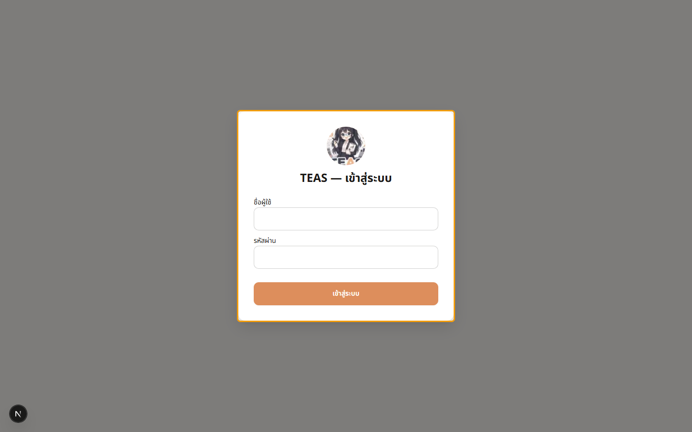
เปิด browser ไปที่ URL ของระบบ — หน้าเข้าสู่ระบบจะแสดงพร้อม ช่อง "ชื่อผู้ใช้" และ "รหัสผ่าน"
ขั้นที่ 2
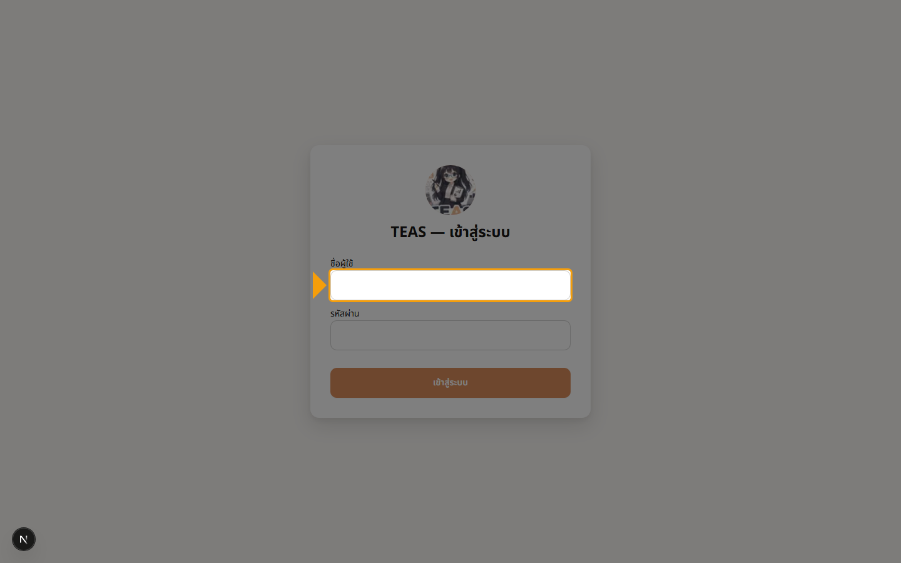
กรอก "ชื่อผู้ใช้" ที่ผู้ดูแลระบบให้มา (ตัวอย่างคู่มือนี้ใช้ demo-accountant)
ขั้นที่ 3
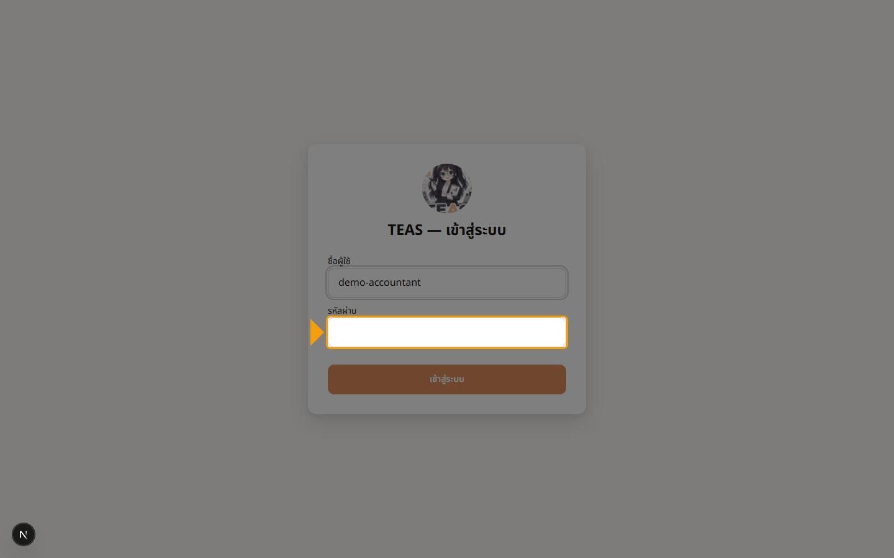
กรอก "รหัสผ่าน" — ตัวอักษรจะถูกซ่อนเป็นจุด. หากตั้ง MFA ไว้ ระบบจะถามรหัส OTP ในขั้นถัดไป
ขั้นที่ 4
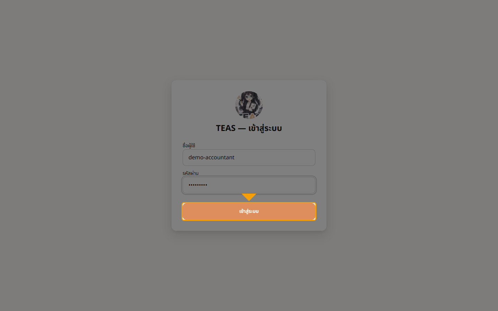
คลิกปุ่ม "เข้าสู่ระบบ" — ระบบจะตรวจสอบ credentials และเปิด session ผ่าน httpOnly cookie
ขั้นที่ 5
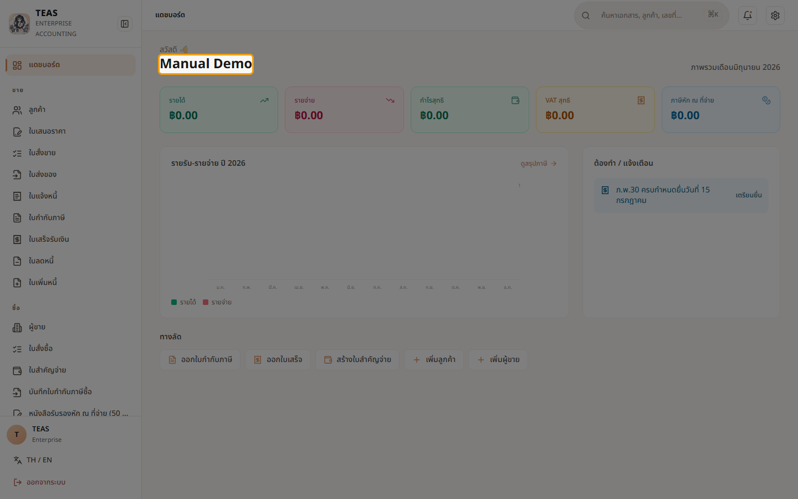
เข้าสู่ระบบสำเร็จ — หน้า "แดชบอร์ด" ปรากฏพร้อมภาพรวมระบบ: ยอดขายเดือนนี้, ภาษีขาย, ใบกำกับภาษี, เลขเอกสารขาดช่วง. เมนูทางซ้ายแสดงโมดูลหลัก: ขาย, ซื้อ, รายงาน
01.02 — สำรวจหน้าแรก (แดชบอร์ด)
เงื่อนไขก่อนใช้งาน: login แล้ว (walkthrough 01.01) · อยู่ที่ URL / (dashboard root)
หลัง login สำเร็จ ผู้ใช้จะมาที่ "แดชบอร์ด" — หน้าแรกที่สรุปสถานะการเงิน
ของเดือนปัจจุบัน และเป็นจุดเริ่มต้นเข้าทุกโมดูล. ในบทนี้คุณจะรู้จัก:
- ส่วนหัว — คำทักทาย + ชื่อบริษัท (ดึงจากข้อมูลบริษัท) + เดือนที่กำลังดู
- ตัวเลขสำคัญเดือนนี้ (KPI) — 5 ช่อง: รายได้ / รายจ่าย / กำไรสุทธิ /
VAT สุทธิ (เฉพาะบริษัทจด VAT) / ภาษีหัก ณ ที่จ่าย
- กราฟรายรับ-รายจ่ายทั้งปี + แผง "ต้องทำ / แจ้งเตือน" ที่รวมงานค้าง
(เลขเอกสารขาดช่วง, เอกสารซื้อไม่ครบ, ภ.พ.30 ใกล้ครบกำหนด ฯลฯ)
- ทางลัด — ปุ่มสร้างเอกสารที่ใช้บ่อย (แสดงตามสิทธิ์ของผู้ใช้)
- โครงสร้าง sidebar ที่แบ่งเป็นกลุ่ม: ขาย / ซื้อ / เงินเดือน / รายงาน / ตั้งค่า
หมายเหตุ: บริษัทตัวอย่างนี้เป็น tenant ใหม่ ยังไม่มีเอกสารที่โพสต์ →
ตัวเลขทุกช่องจึงเป็น ฿0 และกราฟยังว่าง. เมื่อเริ่มออกเอกสารจริง ตัวเลข
จะอัปเดตอัตโนมัติ.
ขั้นที่ 1
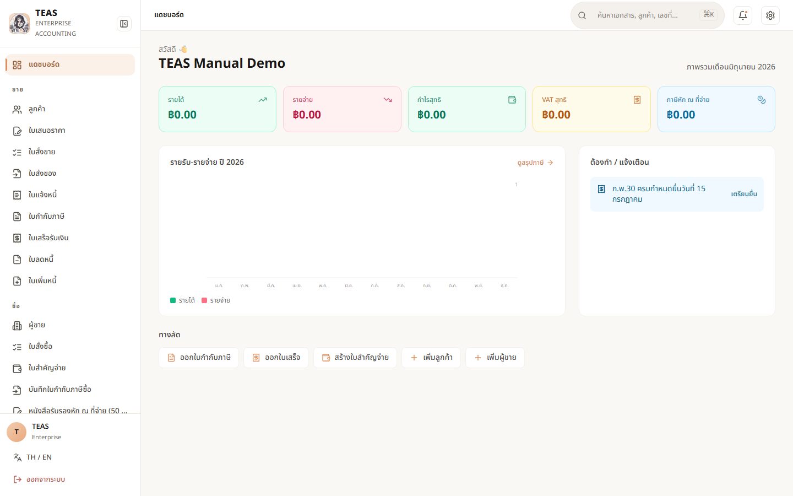
หน้า "แดชบอร์ด" — หน้าแรกหลัง login. แถบบนสุดมีช่องค้นหาเอกสาร/ลูกค้า (กด ⌘K), กระดิ่งแจ้งเตือน และไอคอนตั้งค่า. ถัดมาเป็นส่วนหัว (คำทักทาย + ชื่อบริษัท + เดือนที่กำลังดู) ตามด้วยตัวเลขสำคัญ, กราฟ, แผงแจ้งเตือน และปุ่มทางลัด — ทั้งหมดของเดือนปัจจุบัน
ขั้นที่ 2
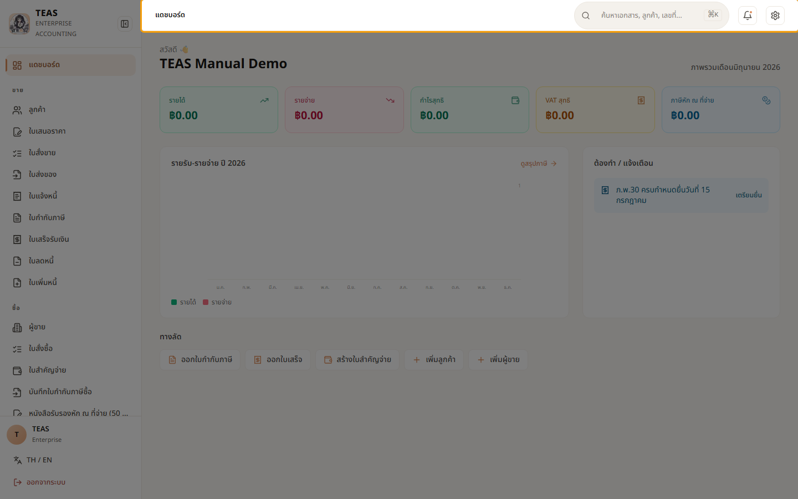
ส่วนหัว — "สวัสดี 👋" + ชื่อบริษัท (ดึงจากข้อมูลบริษัทที่ตั้งไว้ ในเมนู "ตั้งค่า → ข้อมูลบริษัท" — ดูบท 02.05) และข้อความ "ภาพรวมเดือน…" บอกว่ากำลังดูข้อมูลของเดือนใด
ขั้นที่ 3
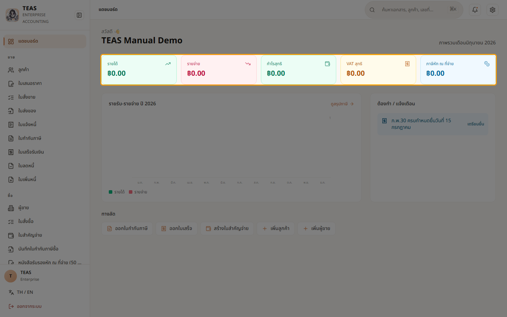
"ตัวเลขสำคัญเดือนนี้" — 5 ช่อง: รายได้, รายจ่าย, กำไรสุทธิ, VAT สุทธิ (เฉพาะบริษัทจด VAT), ภาษีหัก ณ ที่จ่าย. บริษัทใหม่ที่ยังไม่ออก เอกสารจะแสดง ฿0 ทุกช่อง แล้วอัปเดตเองเมื่อโพสต์เอกสาร
ขั้นที่ 4
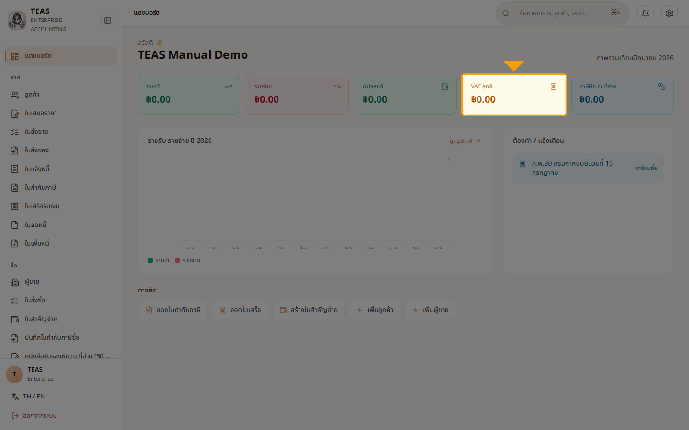
ช่อง "VAT สุทธิ" = ภาษีขาย − ภาษีซื้อของเดือนนี้ (ตัวเลขที่จะยื่น ภ.พ.30). มีกำกับ "ต้องชำระ" หรือ "ขอคืนได้" ตามผลลัพธ์. ช่องนี้แสดงเฉพาะ บริษัทที่จดทะเบียน VAT — บริษัทไม่จด VAT จะไม่เห็นช่องนี้
ขั้นที่ 5
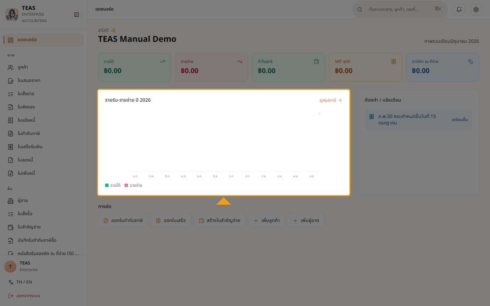
กราฟ "รายรับ-รายจ่าย" ทั้งปี — แท่งคู่รายเดือน (เขียว=รายได้, แดง=รายจ่าย) ครบทั้ง 12 เดือน. tenant ใหม่ยังไม่ออกเอกสาร แท่งจึงเตี้ย (เป็น 0) ทุกเดือน แล้วจะสูงขึ้นเองเมื่อมีรายการจริง. ลิงก์ "ดูสรุปภาษี" มุมขวาบนพาไปหน้าสรุปภาษีรายเดือนแบบละเอียด (บท 07.03)
ขั้นที่ 6
 แผง "ต้องทำ / แจ้งเตือน" — รวมงานค้างที่ต้องจัดการ เช่น เลขเอกสารขาดช่วง, เอกสารซื้อยังไม่ครบ, ภ.พ.30 ใกล้ครบกำหนด. แต่ละรายการ คลิกไปหน้าที่เกี่ยวข้องได้ทันที. ถ้าไม่มีงานค้างจะขึ้น "เรียบร้อยดี" ✓
แผง "ต้องทำ / แจ้งเตือน" — รวมงานค้างที่ต้องจัดการ เช่น เลขเอกสารขาดช่วง, เอกสารซื้อยังไม่ครบ, ภ.พ.30 ใกล้ครบกำหนด. แต่ละรายการ คลิกไปหน้าที่เกี่ยวข้องได้ทันที. ถ้าไม่มีงานค้างจะขึ้น "เรียบร้อยดี" ✓
ขั้นที่ 7
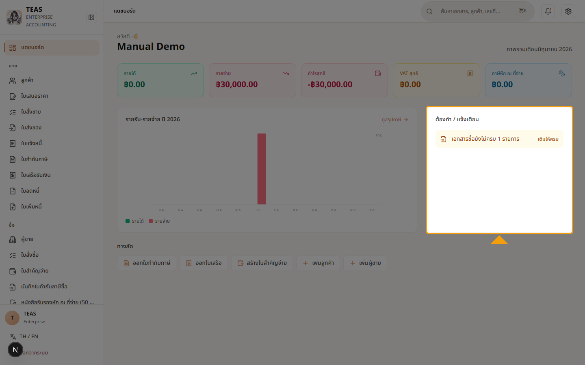
"ทางลัด" — ปุ่มสร้างเอกสารที่ใช้บ่อย (ออกใบกำกับภาษี, ออกใบเสร็จ, สร้างใบสำคัญจ่าย, เพิ่มลูกค้า/ผู้ขาย). ระบบแสดงเฉพาะปุ่มที่ผู้ใช้มีสิทธิ์ — ผู้ใช้แต่ละบทบาทจึงเห็นปุ่มไม่เหมือนกัน
ขั้นที่ 8
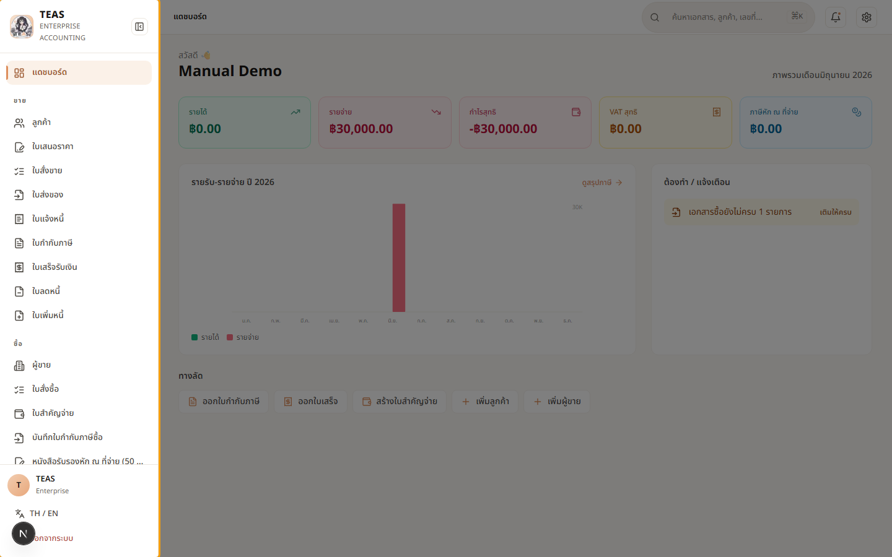
แถบเมนูซ้าย (sidebar) คือ navigation หลัก แบ่งเป็นกลุ่ม: ขาย / ซื้อ / เงินเดือน / รายงาน / ตั้งค่า (เมนูที่เห็นขึ้นกับสิทธิ์ของผู้ใช้). ด้านล่างสุดมีปุ่มสลับภาษา TH/EN (บท 01.03) และ "ออกจากระบบ" (บท 01.04)
01.03 — เปลี่ยนภาษา TH / EN
เงื่อนไขก่อนใช้งาน: login แล้ว (walkthrough 01.01) · อยู่ที่ภาษาไทย (default)
TEAS รองรับ 2 ภาษาในหน้าเดียวกัน — ไทย (default) และ English. การสลับ
จะกระทบทั้ง sidebar, headings, labels, และ stat cards ทันที (client-side
locale switch — ไม่ต้อง reload หน้า).
ศัพท์เฉพาะกฎหมายภาษีไทย เช่น "ภ.พ.30", "50 ทวิ", "ภ.ง.ด." จะคงรูปไว้
แม้สลับเป็น English เพราะเป็นชื่อทางการตามมาตรฐานกรมสรรพากร
(เช่น "ภ.พ.30 VAT Return", "WHT Certificates (50 ทวิ)").
User preference จะถูกเก็บไว้ใน cookie ของ browser — ครั้งต่อไปที่ login
ระบบจะจำภาษาที่เลือกล่าสุด.
ขั้นที่ 1
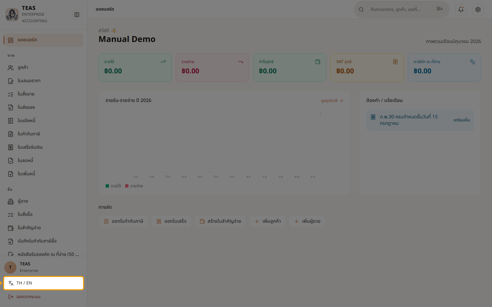
ปุ่ม "TH / EN" อยู่ล่างสุดของ sidebar (เหนือปุ่ม "ออกจากระบบ") — เป็น toggle 1-คลิกสลับภาษา
ขั้นที่ 2
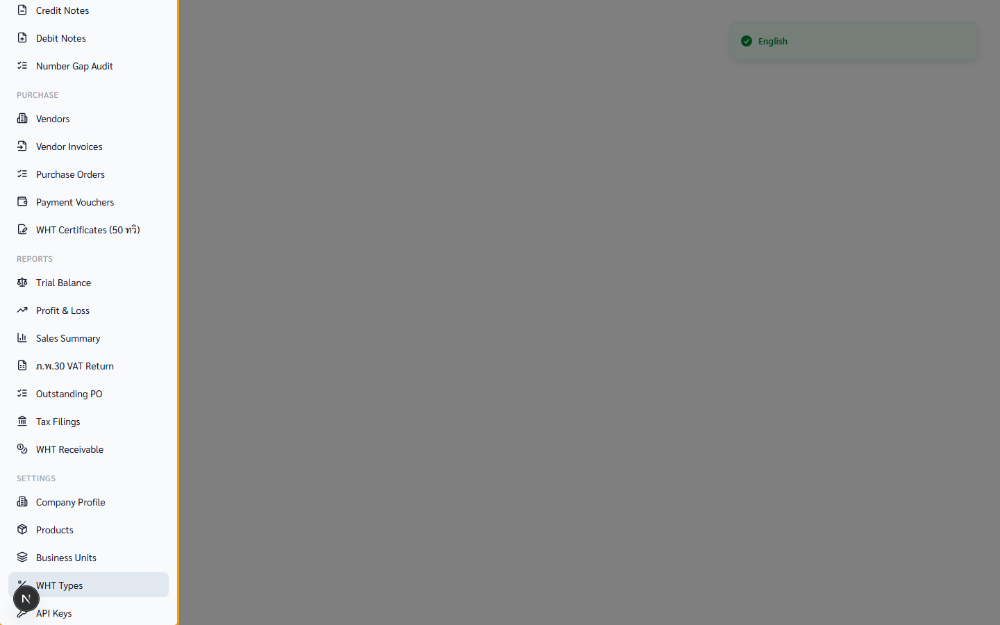
หลังคลิก → toast "English" ปรากฏมุมขวาบน. Sidebar แปลทั้งหมด: "ใบเสนอราคา" → "Quotations", "ใบกำกับภาษี" → "Tax Invoices", "งบทดลอง" → "Trial Balance" ฯลฯ
ขั้นที่ 3
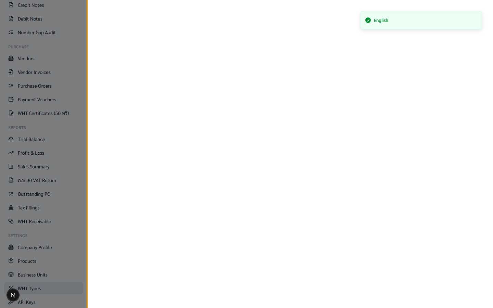
หน้า dashboard แปลด้วย — "แดชบอร์ด" → "Dashboard", "ภาพรวมระบบ" → "System overview", stat cards: "Tax Invoices this month", "Sales this month", "Output VAT this month", "Number gaps"
ขั้นที่ 4
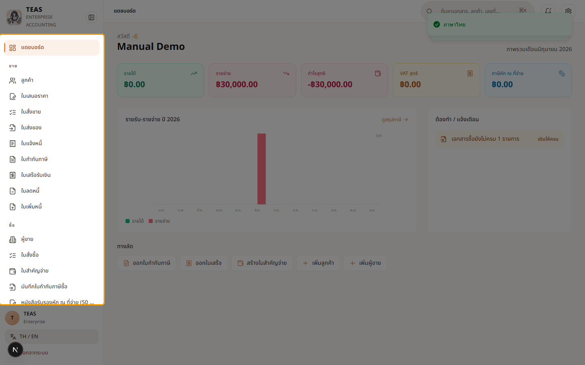
คลิกอีกครั้ง → กลับเป็นภาษาไทย. Toast "ภาษาไทย" ปรากฏ. ค่าที่เลือกล่าสุดจะถูก save ลง cookie อัตโนมัติ
01.04 — ออกจากระบบ
เงื่อนไขก่อนใช้งาน: login แล้ว (walkthrough 01.01) · อยู่ที่หน้าใดก็ได้หลัง login (ส่วนใหญ่ใช้จาก dashboard)
การ "ออกจากระบบ" (logout) จะส่ง POST ไปที่ /api/auth/logout — BFF จะ
ลบ httpOnly cookie ที่เก็บ access_token แล้ว redirect กลับ /login.
ความปลอดภัย: เนื่องจาก JWT เก็บเป็น httpOnly cookie (BFF pattern) —
JavaScript ของหน้าเว็บอ่านไม่ได้อยู่แล้ว, การ logout ฝั่ง browser จึง
เพียงพอแม้ยังไม่ revoke token ฝั่ง server (token จะ expire ตามอายุปกติ).
หากต้องการ revoke ทันที (เช่นกรณี mobile device หาย) — admin สามารถ
กดบังคับ logout จาก User Management (ดูบทที่ 6 → "ผู้ใช้งาน" → revoke session).
หมายเหตุ: chapter index เดิมระบุ walkthrough "Dark mode" ที่ 01.04 — แต่
ฟีเจอร์ยังไม่ implement, logout จึงเลื่อนมาเป็น 01.04.
ขั้นที่ 1
ปุ่ม "ออกจากระบบ" อยู่ล่างสุดของ sidebar (ใต้ปุ่ม "TH / EN") — สีข้อความเป็นสีแดง บอกว่าเป็น destructive action
ขั้นที่ 2
 หลังคลิก → ระบบจะส่ง POST /api/auth/logout → cookie ถูก clear → redirect กลับหน้า /login. ตอนนี้ session สิ้นสุดแล้ว
หลังคลิก → ระบบจะส่ง POST /api/auth/logout → cookie ถูก clear → redirect กลับหน้า /login. ตอนนี้ session สิ้นสุดแล้ว
ขั้นที่ 3
 ลองกดปุ่ม "Back" ของ browser → ระบบจะ redirect กลับ /login เสมอ (middleware ตรวจ cookie ทุก request). พิสูจน์ว่า session ถูก clear จริง
ลองกดปุ่ม "Back" ของ browser → ระบบจะ redirect กลับ /login เสมอ (middleware ตรวจ cookie ทุก request). พิสูจน์ว่า session ถูก clear จริง
02.01 — ตั้งค่าหน่วยธุรกิจ (Business Unit)
เงื่อนไขก่อนใช้งาน: login ในฐานะ admin หรือ accountant (ทั้งคู่มีสิทธิ์ master.business_unit.manage) · manual-demo seed applied (ECOM/LAB/REPT)
หน่วยธุรกิจ (BU) ใช้แบ่งกลุ่มภายในบริษัทเดียวกัน — รหัส BU (อักษรพิมพ์ใหญ่
A-Z + ตัวเลข ≤20 ตัว) จะถูกแทรกใน prefix เลขเอกสาร เช่น
12-2026-TI-ECOM-0001.
ตั้งให้เรียบร้อยก่อนเริ่มออกเอกสาร — เปลี่ยนรหัสภายหลังจะกระทบเอกสารเก่า
ที่อ้างรหัสเดิม.
ในบทนี้คุณจะได้สาธิตทั้ง 4 actions: เพิ่ม → แก้ไข → ปิดใช้งาน → เปิดใช้งานใหม่.
ขั้นที่ 1
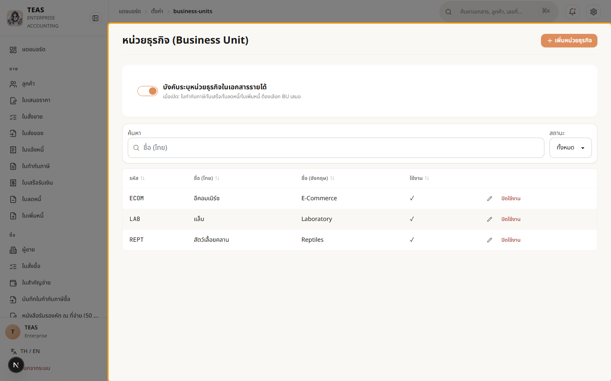
หน้า "หน่วยธุรกิจ (Business Unit)" — 3 BUs จาก seed (ECOM อีคอมเมิร์ซ / LAB แล็บ / REPT สัตว์เลื้อยคลาน). คอลัมน์: รหัส, ชื่อ (ไทย), ชื่อ (อังกฤษ), ใช้งาน, [✏️ แก้ไข] [ปิดใช้งาน]
ขั้นที่ 2
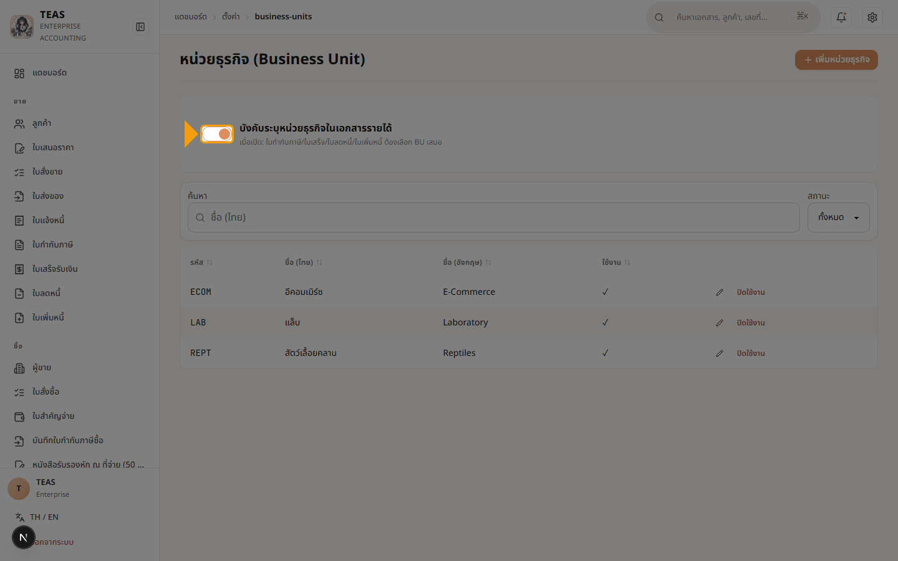
toggle "บังคับระบุหน่วยธุรกิจในเอกสารรายได้" — เมื่อเปิด: ออกใบกำกับภาษี/ใบเสร็จ/ใบลดหนี้/ใบเพิ่มหนี้ ต้องเลือก BU ทุกครั้ง (กดยังต่อไม่ได้ถ้าไม่เลือก)
ขั้นที่ 3
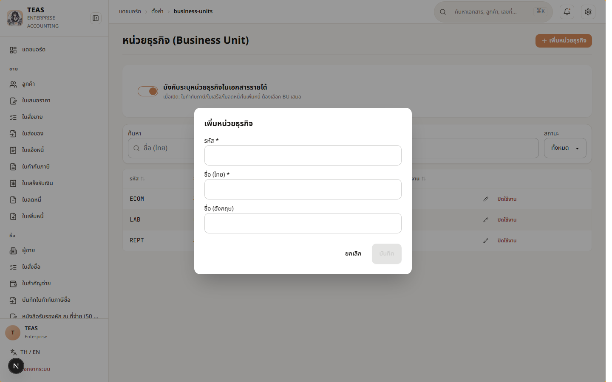
คลิก "+ เพิ่มหน่วยธุรกิจ" → modal เปิด. Fields: รหัส* (A-Z + 0-9, ≤20), ชื่อ (ไทย)*, ชื่อ (อังกฤษ). ปุ่ม "บันทึก" จะ enable เมื่อกรอก required ครบ
ขั้นที่ 4
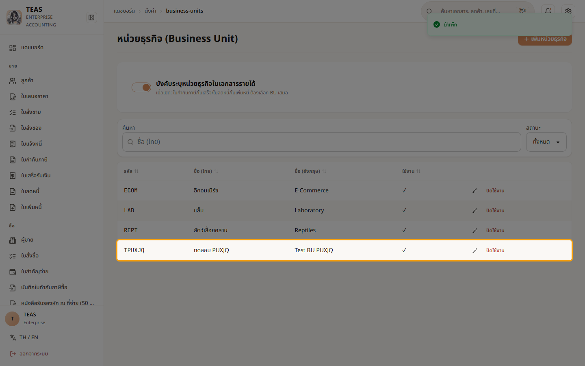
กด "บันทึก" → POST /api/proxy/business-units → toast เขียว "บันทึก" มุมขวาบน → modal ปิด → row ใหม่ "TPUXJQ / ทดสอบ PUXJQ / Test BU PUXJQ" ปรากฏพร้อม ✓ ใช้งาน
ขั้นที่ 5
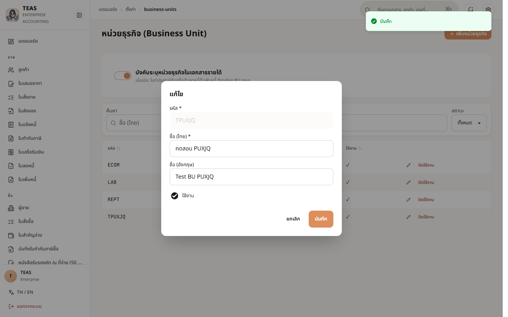
คลิก ✏️ แก้ไข ใน row "TPUXJQ" → modal เปิดพร้อมค่าปัจจุบัน. ตัวอย่าง: แก้ "ชื่ออังกฤษ" เป็น "Test BU PUXJQ (Main)" → กด "บันทึก" → PUT 204 → table refresh. หมายเหตุ: ห้ามแก้รหัส (code) หลังออกเอกสารแล้ว
ขั้นที่ 6
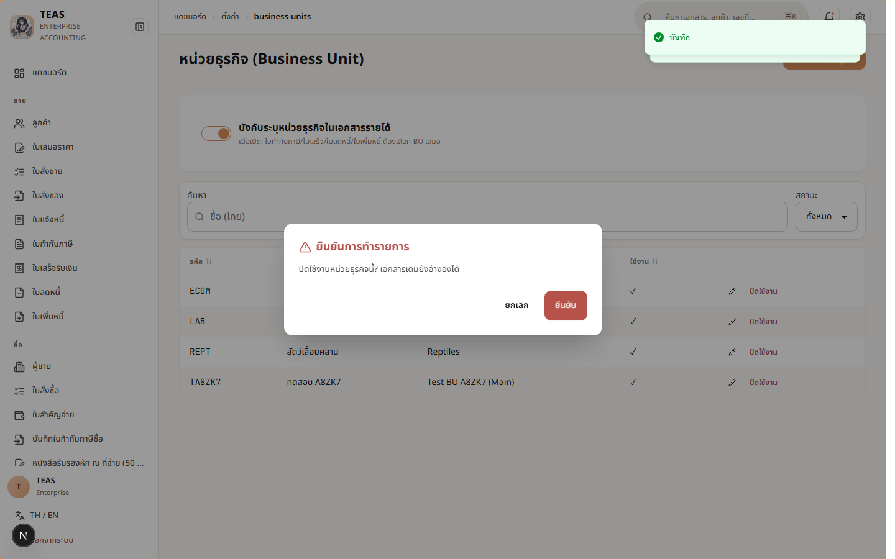
กด "ปิดใช้งาน" → custom AlertDialog เปิด (Sprint 13d-P1): "⚠️ ยืนยันการทำรายการ — ปิดใช้งานหน่วยธุรกิจนี้? เอกสารเดิมยังอ้างอิงได้". 2 ปุ่ม: "ยกเลิก" (เทา) + "ยืนยัน" (สีแดง — destructive variant)
ขั้นที่ 7
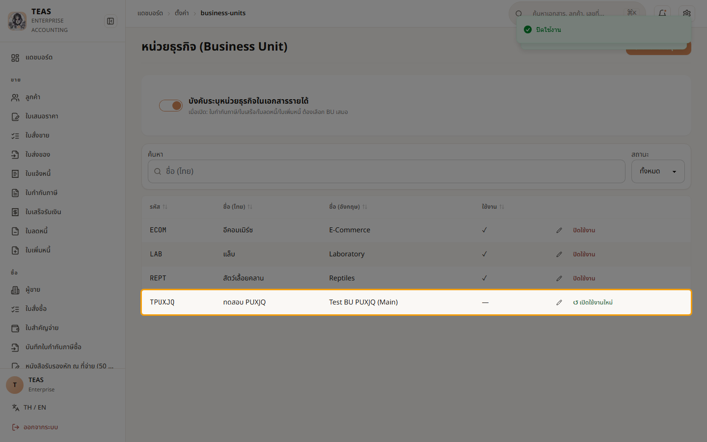
ยืนยัน → DELETE 204 (soft) → "TPUXJQ" row ใช้งาน column เป็น "—" (inactive). ปุ่ม action เปลี่ยน: "ปิดใช้งาน" → "↺ เปิดใช้งานใหม่" (Sprint 13d-P4)
ขั้นที่ 8
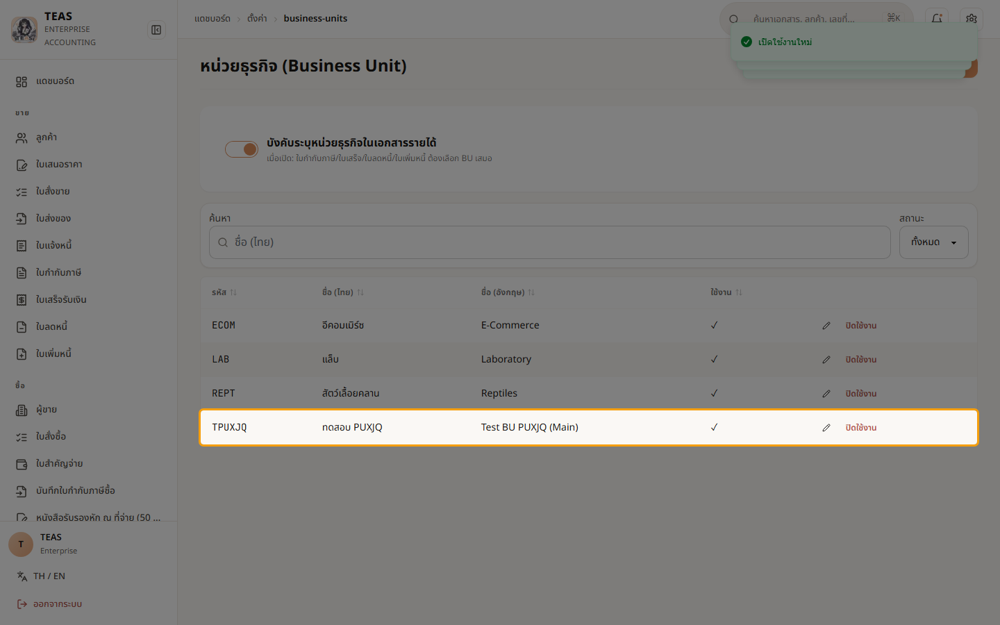
คลิก "↺ เปิดใช้งานใหม่" → PUT isActive=true → toast "เปิดใช้งานใหม่" → row "TPUXJQ" กลับเป็น ✓ ใช้งาน + ปุ่มกลับเป็น "ปิดใช้งาน"
02.02 — ตั้งค่าสินค้า/บริการ
เงื่อนไขก่อนใช้งาน: login (admin หรือ accountant) · manual-demo seed (10 product rows)
สินค้า/บริการคือ master data ที่ใช้ในทุก line item ของเอกสาร
(Quotation, Sales Order, Tax Invoice, Vendor Invoice). การตั้ง
ประเภท ให้ถูกต้องสำคัญที่สุด — กระทบการคิด VAT 7% ทันที.
ระบบรองรับ 4 ประเภท:
| ประเภท |
VAT 7% |
ตัวอย่าง |
| GOOD |
✓ ต้องเสีย |
ตู้เลี้ยงปลา, เครื่องกรองน้ำ |
| SERVICE |
✓ ต้องเสีย |
ค่าที่ปรึกษา, ค่าบริการตรวจ |
| EXEMPT_GOOD |
— ยกเว้น |
สัตว์มีชีวิต, อาหารสัตว์ |
| EXEMPT_SERVICE |
— ยกเว้น |
บริการการศึกษา, ค่ารักษาพยาบาล |
ตั้งประเภทผิด → คิด VAT ผิด → ภ.พ.30 ยื่นผิด → โดนเบี้ยปรับ.
รหัส (SKU) จะ lock หลังจากมีการใช้ใน document แล้ว — ตั้งให้ดีตั้งแต่แรก.
"ราคาตั้งต้น" คือ default ที่ pre-fill ตอนเลือกสินค้าในเอกสาร — ผู้ใช้
แก้ราคาในเอกสารได้ตามจริง.
ขั้นที่ 1
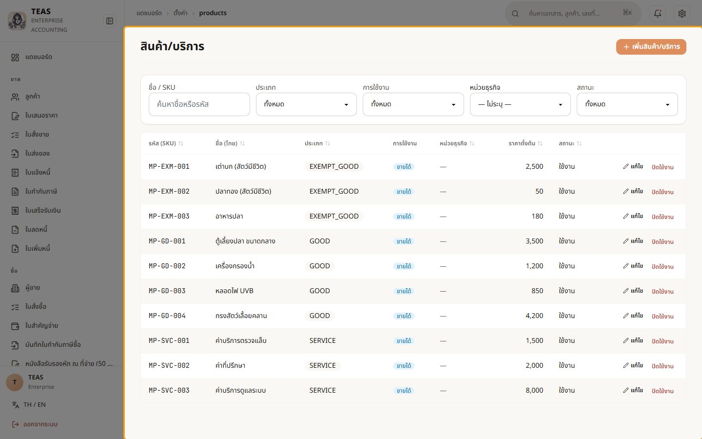
หน้า "สินค้า/บริการ" — 10 รายการจาก seed. คอลัมน์: รหัส (SKU), ชื่อ (ไทย), ประเภท, ราคาตั้งต้น, สถานะ, [✏️ แก้ไข] [ปิดใช้งาน]
ขั้นที่ 2
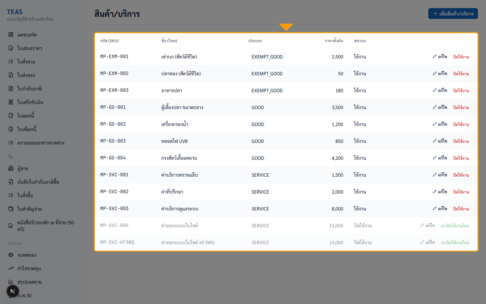
สังเกตคอลัมน์ "ประเภท" — แต่ละ row บอก VAT rule: EXEMPT_GOOD (MP-EXM-* ปลา/อาหารสัตว์ = VAT 0%), GOOD (MP-GD-* อุปกรณ์ = VAT 7%), SERVICE (MP-SVC-* บริการ = VAT 7% + อาจ WHT)
ขั้นที่ 3
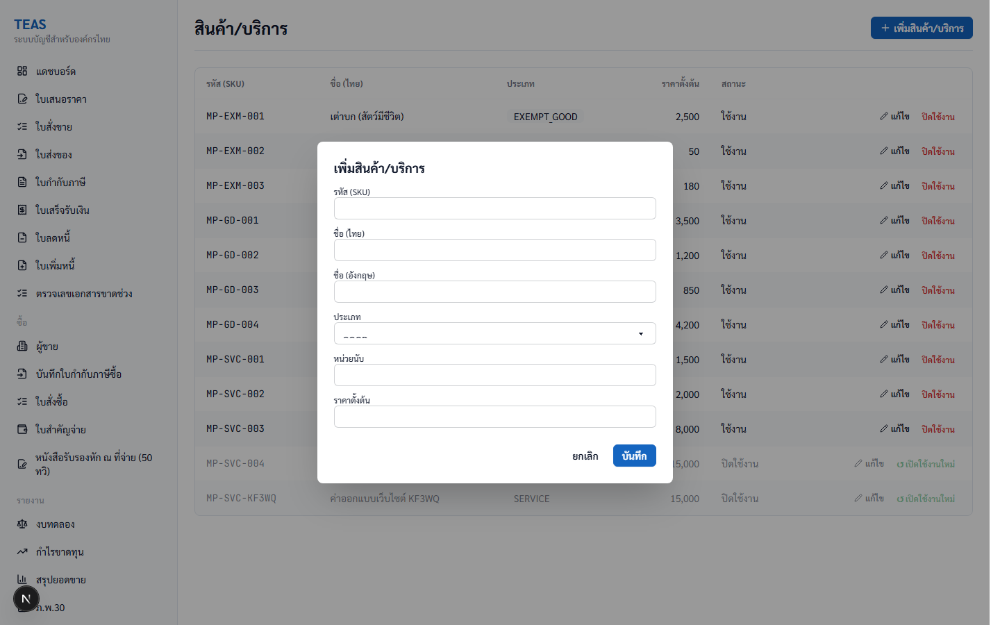
คลิก "+ เพิ่มสินค้า/บริการ" → modal เปิด. Fields: รหัส (SKU)*, ชื่อ (ไทย)*, ชื่อ (อังกฤษ), ประเภท (dropdown 4 options), หน่วยนับ, ราคาตั้งต้น
ขั้นที่ 4
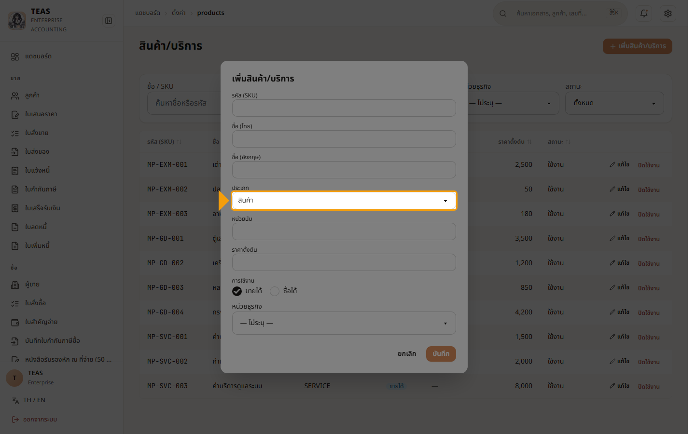
dropdown "ประเภท" มี 4 options: GOOD (default), SERVICE, EXEMPT_GOOD, EXEMPT_SERVICE. ตัวเลือกที่ขึ้นต้น "EXEMPT_" = ไม่คิด VAT 7%
ขั้นที่ 5
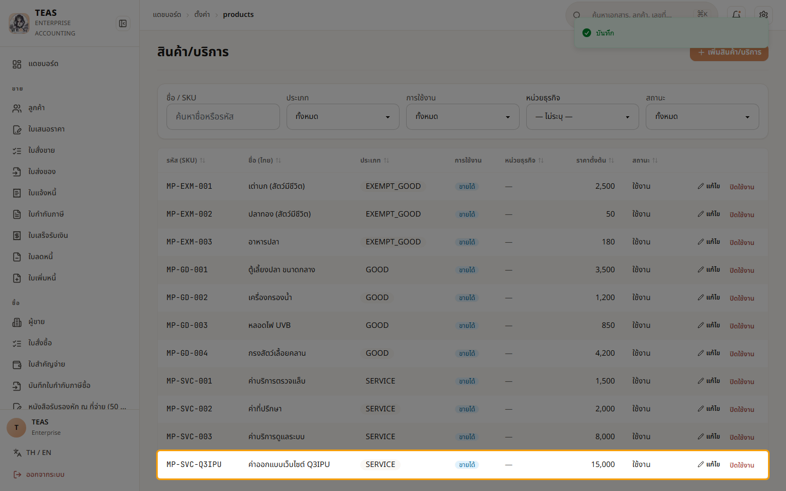
กด "บันทึก" → POST → toast "บันทึก" → row ใหม่ "MP-SVC-Q3IPU / ค่าออกแบบเว็บไซต์ Q3IPU / SERVICE / 15,000.00 / ใช้งาน" ปรากฏ. ระบบจะคิด VAT 7% และเตือนหัก ณ ที่จ่ายอัตโนมัติเมื่อใช้ในเอกสาร
ขั้นที่ 6
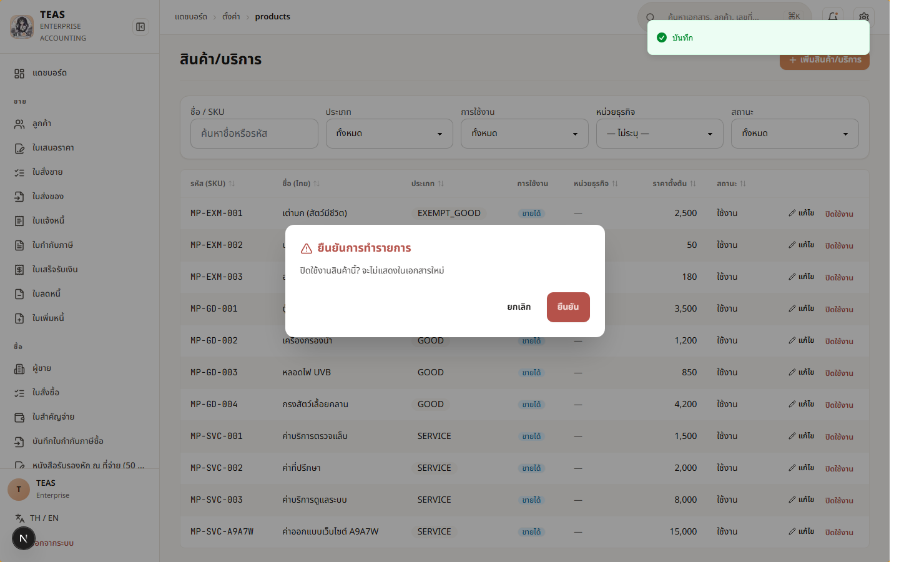
กด "ปิดใช้งาน" → AlertDialog เปิด (เหมือน BU 02.01). ถ้าเอกสารเดิมอ้างสินค้านี้ — ยังอ้างได้ (soft delete + audit trail)
ขั้นที่ 7
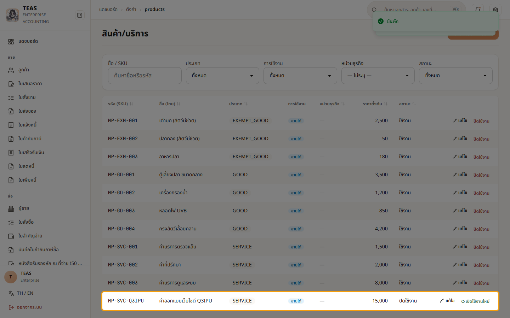
row "MP-SVC-Q3IPU" สถานะเปลี่ยนเป็น "—" + action เป็น "↺ เปิดใช้งานใหม่". Restore = PUT isActive=true (Sprint 13d-P4)
02.03 — ตั้งค่าประเภทหัก ณ ที่จ่าย (Admin only)
เงื่อนไขก่อนใช้งาน: login ในฐานะ ADMIN (demo-admin) — ไม่ใช่ accountant · manual-demo seed (3 WHT rows: ADS/RENT/SVC)
ระบบหัก ณ ที่จ่าย (WHT) ในไทยต้องระบุ 3 อย่างพร้อมกัน:
- ประเภทเงินได้ (มาตรา 40) — บอกประเภทของรายได้
(ม.40(2) ค่าจ้าง, ม.40(3) ค่าลิขสิทธิ์, ม.40(4) ดอกเบี้ย/ปันผล,
ม.40(5) ค่าเช่า, ม.40(6) วิชาชีพอิสระ, ม.40(7) รับเหมา, ม.40(8) อื่น ๆ)
- อัตรา (%) — เปอร์เซ็นต์หัก ณ ที่จ่าย (เช่น 3%, 5%, 15%)
- แบบยื่น — ภ.ง.ด.1 (เงินเดือน) / ภ.ง.ด.3 (จ่ายให้บุคคล) /
ภ.ง.ด.53 (จ่ายให้นิติบุคคล) / ภ.ง.ด.54 (จ่ายต่างประเทศ)
Effective-date pattern: อัตรา WHT เปลี่ยนตามกฎหมายเป็นบางช่วง — ระบบ
เก็บประวัติอัตราผ่านปุ่ม "เปลี่ยนอัตรา" (ดู step 4). ระบบจะใช้อัตรา
ที่ถูกต้องตามวันที่เอกสารจริง ไม่ใช่อัตราล่าสุด — สอดคล้องกับเอกสารเก่า
ที่ออกก่อนเปลี่ยนกฎหมาย.
ต้องเป็น admin role (tax.wht_type.manage scope) เพื่อจะ CRUD —
accountant อ่านได้แต่ไม่เห็นปุ่ม action.
ขั้นที่ 1
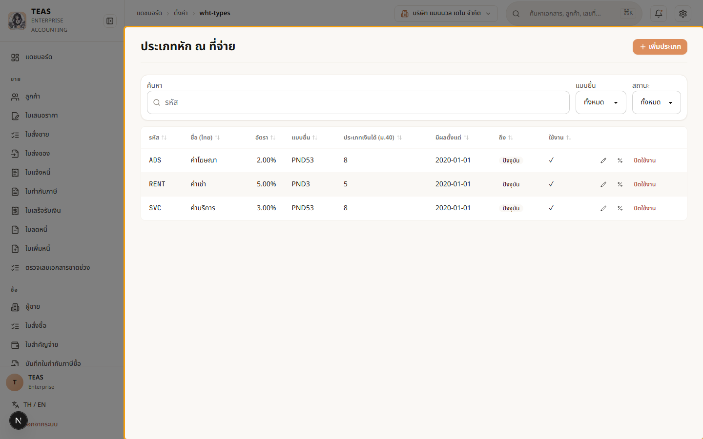
หน้า "ประเภทหัก ณ ที่จ่าย" — 3 ประเภทจาก seed สำหรับ tenant นี้: ADS (ค่าโฆษณา) 2% PND53, RENT (ค่าเช่า) 5% PND3, SVC (ค่าบริการ) 3% PND53. หมายเหตุ: Sprint 13f แก้ cross-tenant leak — ก่อนหน้านี้ admin เห็น 18 rows รวมข้อมูล tenant อื่น
ขั้นที่ 2
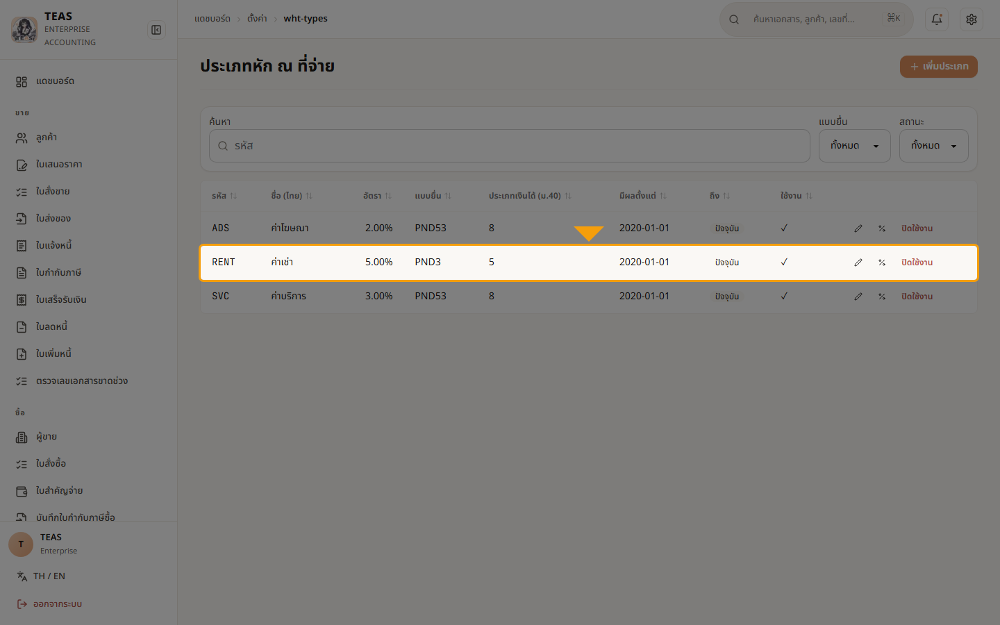
แต่ละ row บอก รหัส, ชื่อ, อัตรา, แบบยื่น (PND3/PND53), ประเภทเงินได้ (ม.40), ช่วงมีผล (มีผลตั้งแต่ — ถึง), สถานะ, actions: [✏️ แก้ไข] [% เปลี่ยนอัตรา] [ปิดใช้งาน]
ขั้นที่ 3
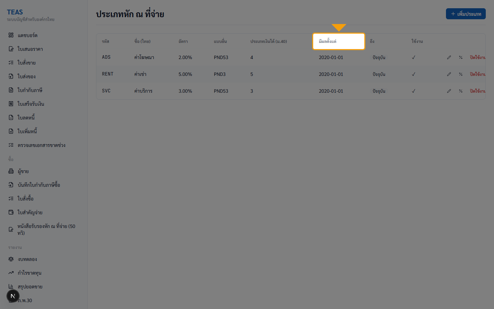
คอลัมน์ "มีผลตั้งแต่ / ถึง" — แสดงช่วงเวลาที่อัตรานี้ใช้. "ปัจจุบัน" = row ที่ใช้อยู่ตอนนี้. row เก่ามี "ถึง" เป็นวันที่ — ใช้กับ เอกสารที่ออกก่อนวันนั้น (เก็บประวัติเพื่อ render เอกสารเก่าถูกต้อง)
ขั้นที่ 4
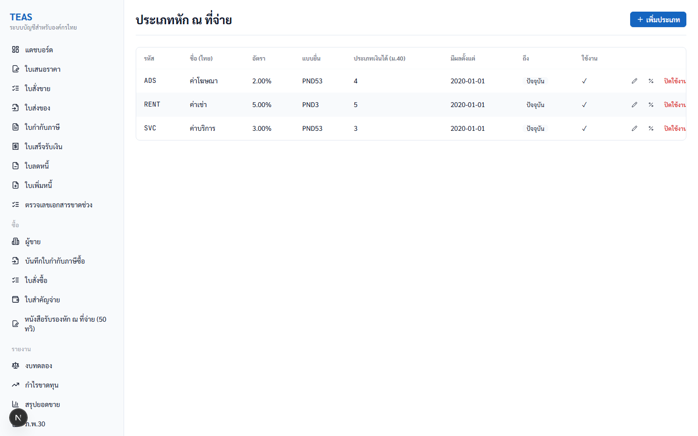
ปุ่ม "% เปลี่ยนอัตรา" — ใช้เมื่อกฎหมายเปลี่ยนอัตรา (เช่น สรรพากรลด WHT 3% → 1.5%). ระบบจะสร้าง row ใหม่ + set "ถึง" ของ row เก่าเป็นวันก่อนหน้า → เอกสารเก่าใช้อัตราเดิม, เอกสารใหม่ ใช้อัตราใหม่ (effective-date pattern, plan §16.4)
ขั้นที่ 5
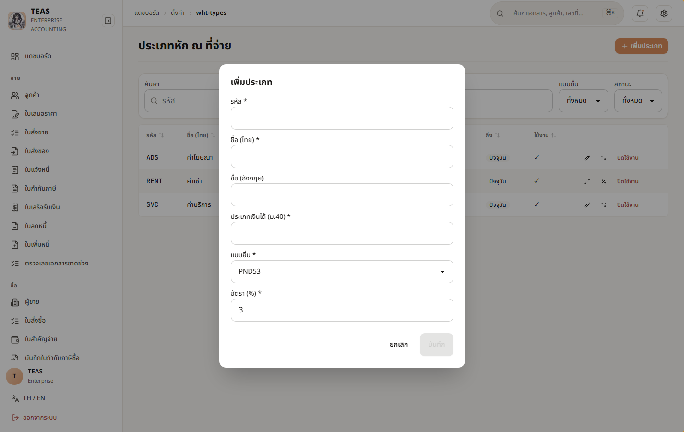
คลิก "+ เพิ่มประเภท" → modal เปิด. Fields: รหัส*, ชื่อ (ไทย)*, ชื่อ (อังกฤษ), ประเภทเงินได้ (ม.40)*, แบบยื่น (dropdown), อัตรา (%)*
ขั้นที่ 6
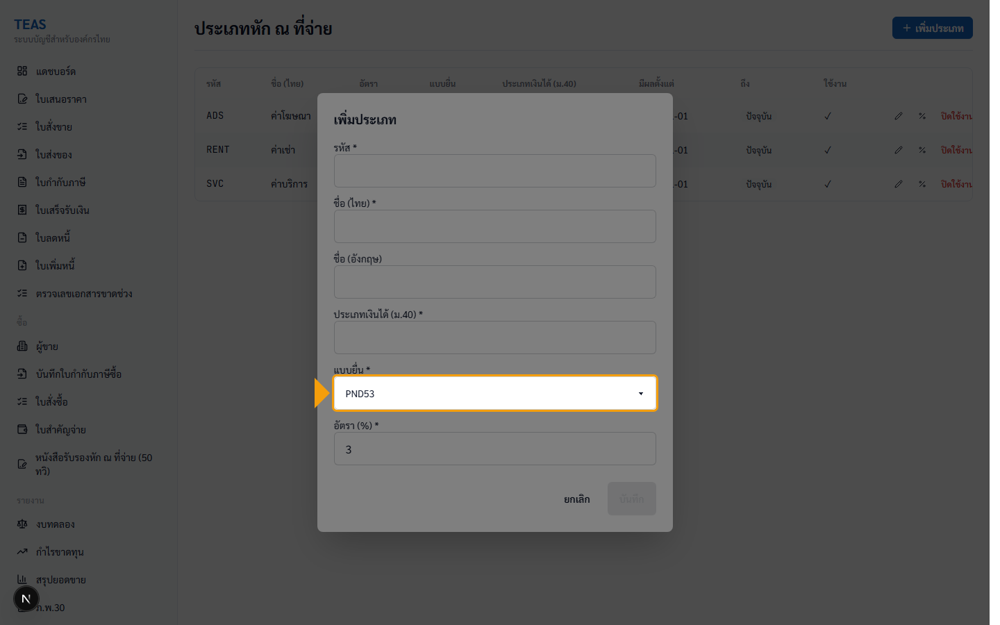
dropdown "แบบยื่น" — ภ.ง.ด.1 (เงินเดือน), ภ.ง.ด.3 (บุคคลธรรมดา), ภ.ง.ด.53 (นิติบุคคล — ใช้บ่อยสุด)
ขั้นที่ 7
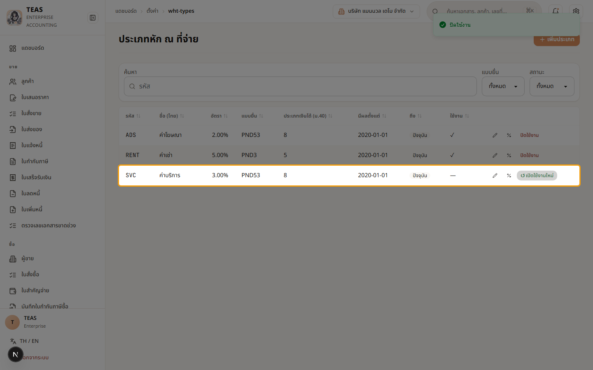
⚠️ คลิก "ปิดใช้งาน" SVC row → disable ทันที (no confirm). Sprint 13d-P1 ได้ migrate 7 callers จาก window.confirm → AlertDialog แต่ WHT-types ยังไม่ในชุดนั้น (task #58). ระวังการคลิกผิด
ขั้นที่ 8
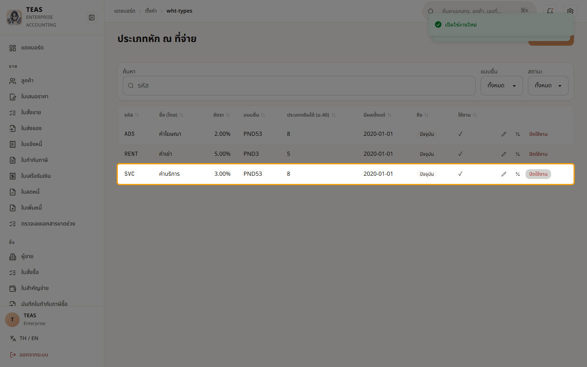
SVC row inactive แล้ว action เปลี่ยนเป็น "↺ เปิดใช้งานใหม่". คลิก → POST /wht-types/{id}/reactivate → 204 → toast "เปิดใช้งานใหม่" → row กลับมา active (Sprint 13f-P2 Option A: dedicated endpoint)
02.04 — สร้าง API Keys (Admin only)
เงื่อนไขก่อนใช้งาน: login ในฐานะ ADMIN (demo-admin) · BU ตั้งครบแล้ว (walkthrough 02.01) · ทราบว่า external app จะใช้ scopes อะไรบ้าง (least privilege)
API Key ใช้ให้ระบบภายนอก (microservice, mobile app, partner integration)
เรียก TEAS โดยไม่ต้อง login. แต่ละ key มี:
- Scopes — granular permissions เฉพาะที่จำเป็น (least privilege)
เช่น sales.tax_invoice.create, sales.receipt.post
- Business Unit เริ่มต้น (Sprint 14) — ผูก key กับ 1 BU
เอกสารที่สร้างจาก key นี้จะถูก tag กับ BU นั้นอัตโนมัติ —
ป้องกัน microservice ของ ECOM ไปสร้างเอกสารใน LAB โดยไม่ตั้งใจ
- หมดอายุ (optional) — แนะนำตั้งสำหรับ contractor / temp staff
🔐 สำคัญ — key เห็นได้ครั้งเดียวเท่านั้น: หลังกด "สร้าง" ระบบจะแสดง
full key 1 ครั้ง. ระบบเก็บแค่ hash + prefix. ถ้าไม่ copy เก็บใน secret
manager ของ external app → ลืมแล้วต้องสร้างใหม่ (revoke ของเก่า).
Request header: external app ส่ง key มาทาง X-Api-Key: <full_key>
ในทุก request ไป /api/v1/* endpoints.
Role: ADMIN only — sys.api_key.manage scope. Accountant เห็น
NoAccessState ("ต้องมีสิทธิ์ผู้ดูแลระบบ").
ขั้นที่ 1
 หน้า "API Keys" — เริ่มต้นไม่มี key (empty state พร้อม icon). คอลัมน์: ชื่อ, Key prefix, สิทธิ์ (scopes), Business Unit เริ่มต้น, ใช้ล่าสุด, หมดอายุ, สถานะ
หน้า "API Keys" — เริ่มต้นไม่มี key (empty state พร้อม icon). คอลัมน์: ชื่อ, Key prefix, สิทธิ์ (scopes), Business Unit เริ่มต้น, ใช้ล่าสุด, หมดอายุ, สถานะ
ขั้นที่ 2
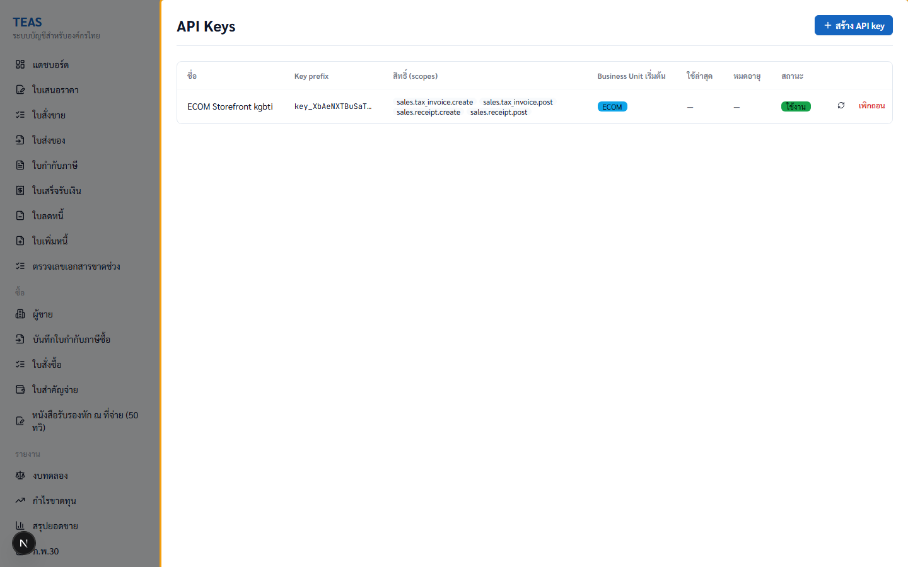
หมายเหตุ — accountant ที่เข้าหน้านี้จะเห็น "ต้องมีสิทธิ์ ผู้ดูแลระบบ" (Sprint 13d-P2 NoAccessState) + ไม่มีปุ่ม "+ สร้าง" (Sprint 13d-P3 PermissionGate). ต้อง admin เท่านั้น
ขั้นที่ 3
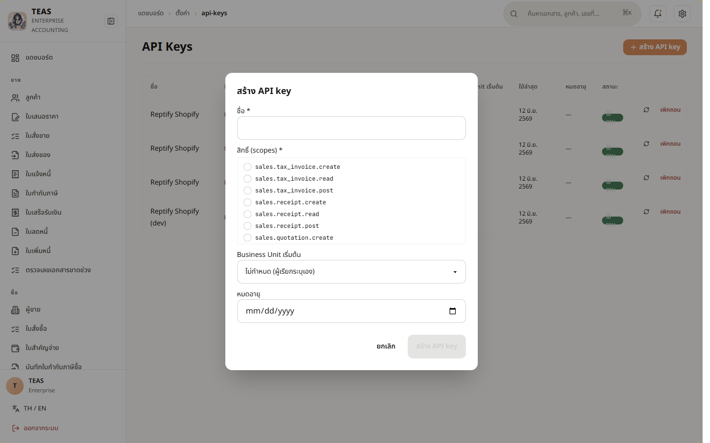
คลิก "+ สร้าง API key" → modal เปิด. 4 sections: ชื่อ*, สิทธิ์ (scopes)*, Business Unit เริ่มต้น, หมดอายุ
ขั้นที่ 4
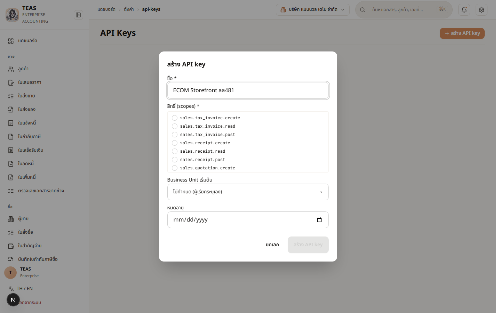
กรอก "ชื่อ" — ใช้บอกว่า key นี้สำหรับอะไร (เช่น "ECOM Storefront — production"). ไม่กระทบความปลอดภัย แต่ช่วย ตอน revoke ทีหลัง
ขั้นที่ 5
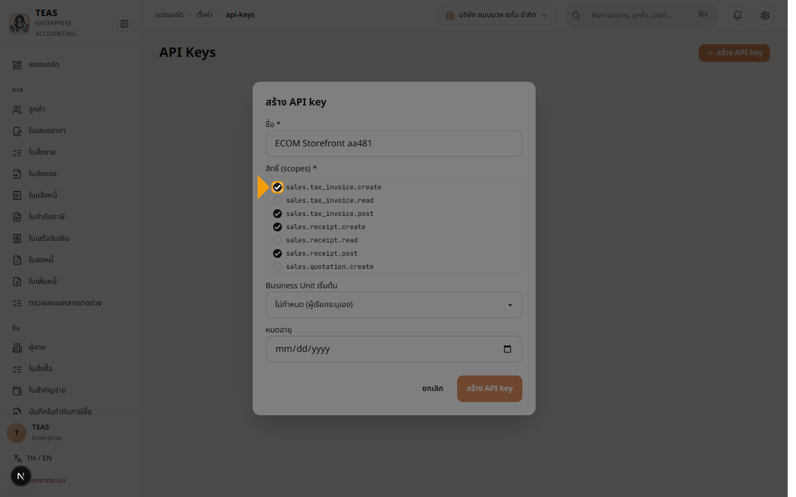
เลือก scopes — สำหรับ storefront ทั่วไป: sales.tax_invoice.create, sales.tax_invoice.post, sales.receipt.create, sales.receipt.post. หลีกเลี่ยง .delete หรือ admin scopes ที่ไม่ใช้
ขั้นที่ 6
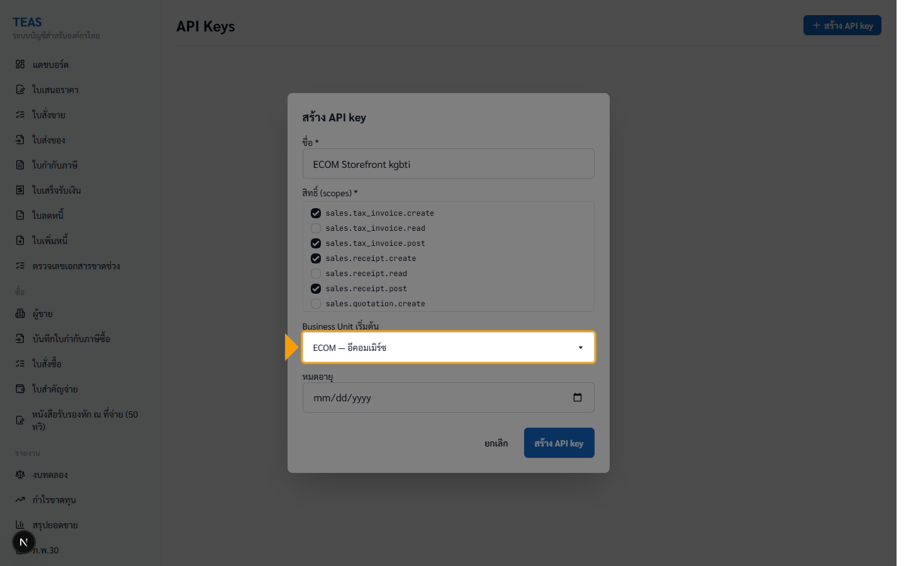
เลือก "Business Unit เริ่มต้น" — เช่น ECOM. ทุกเอกสารที่ key นี้สร้างจะ tag เป็น BU ECOM อัตโนมัติ. ถ้าเลือก "ไม่กำหนด" → ผู้เรียกต้องส่ง BU ในทุก request
ขั้นที่ 7
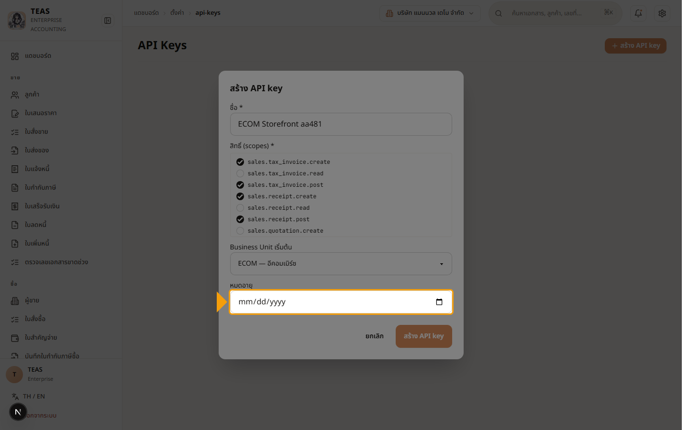
"หมดอายุ" (optional). แนะนำตั้งสำหรับ contractor / temp. Production keys อาจปล่อยว่าง แต่ควร rotate ทุก 90 วัน (best practice)
ขั้นที่ 8
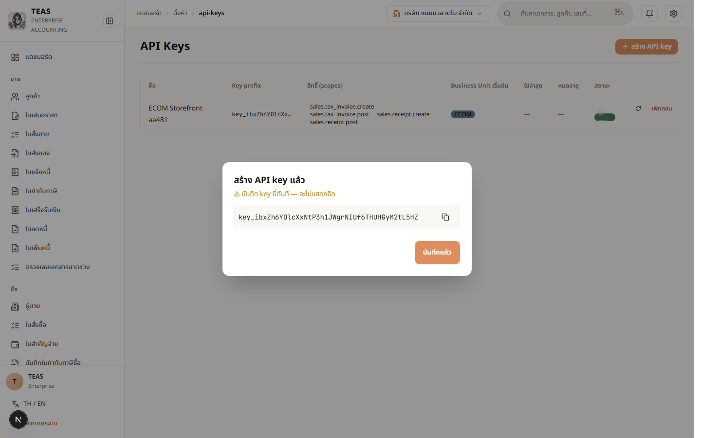
กด "สร้าง" → modal แสดง **full key 1 ครั้งเท่านั้น** พร้อม ปุ่ม "Copy". 🔐 Copy ใส่ secret manager ของ external app ทันที (Azure Key Vault / AWS Secrets Manager / Vault). ถ้าปิด modal ก่อน copy → ต้อง revoke + สร้างใหม่ (ระบบเก็บแค่ hash)
02.05 — ตั้งค่าข้อมูลบริษัท (Company Profile — ทำก่อนเป็นอันแรก)
เงื่อนไขก่อนใช้งาน: login ในฐานะ ADMIN (demo-admin) สำหรับ edit · manual-demo seed (รัน 410_seed_manual_demo_company_profile.sql)
ข้อมูลบริษัทถูก embed ในทุกเอกสารทางภาษี (Tax Invoice / Receipt / CN / DN
header). ตามกฎหมาย ข้อมูลที่พิมพ์ในเอกสารต้องตรงกับ ภ.พ.20 ที่จดทะเบียน
VAT กับกรมสรรพากร.
Hybrid lock model (plan §6.7):
Hard fields (อ่านอย่างเดียวใน Phase 1):
- ชื่อนิติบุคคล, เลขผู้เสียภาษี, เลขทะเบียนนิติบุคคล, รหัสสาขา
- ที่อยู่จดทะเบียน (line 1+2, แขวง, เขต, จังหวัด, ไปรษณีย์)
- วันที่จดทะเบียน VAT
→ ต้องแก้ผ่าน ops + ยื่น ภ.พ.09 ก่อน. Phase 2 จะมี 2-person approval +
attachment upload ของ ภ.พ.09.
Soft fields (admin role แก้ได้):
- ชื่อทางการค้า (Brand name), โลโก้, เบอร์, อีเมล, เว็บไซต์, ผู้ติดต่อ
- Banking info (สำหรับ payment instructions)
สำคัญ: ทำ walkthrough นี้ ก่อน walkthrough อื่นใน chapter 2 หาก
เพิ่งตั้ง tenant ใหม่ — เพราะข้อมูลถูก embed ในเอกสารที่ออกหลังจากนั้น.
Role:
- Read: ทุก authenticated user (ใช้ render document headers)
- Update soft: ADMIN only (master.company.manage scope)
- Update hard: returns 501 — Phase 2 feature
ขั้นที่ 1
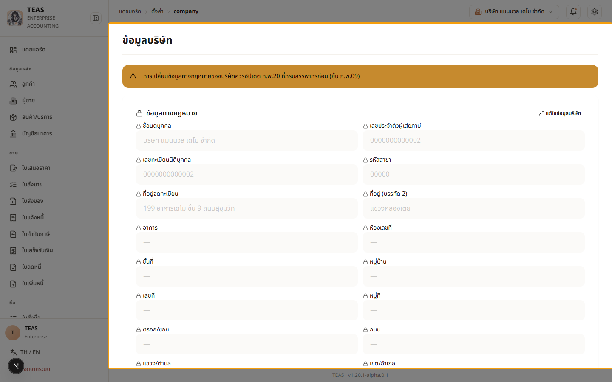
หน้า "ข้อมูลบริษัท" (sidebar "ตั้งค่า" → ลิงก์แรก). 2 sections: "ข้อมูลทางกฎหมาย" (hard, locked) + "ข้อมูลติดต่อ + การชำระเงิน" (soft, editable). Banner ⚠️ ส้มด้านบนเตือนเรื่อง ภ.พ.09
ขั้นที่ 2
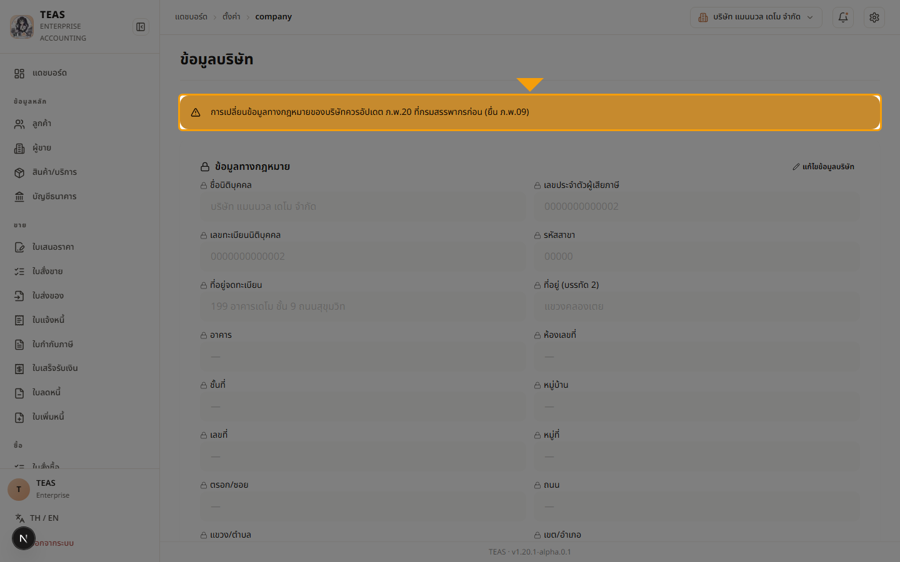
Banner ⚠️ — "การเปลี่ยนข้อมูลทางกฎหมายของบริษัทควรอัปเดต ภ.พ.20 ที่กรมสรรพากรก่อน (ยื่น ภ.พ.09)". ผู้ใช้ต้องไปสรรพากรก่อน จึงจะมาแก้ในระบบ
ขั้นที่ 3
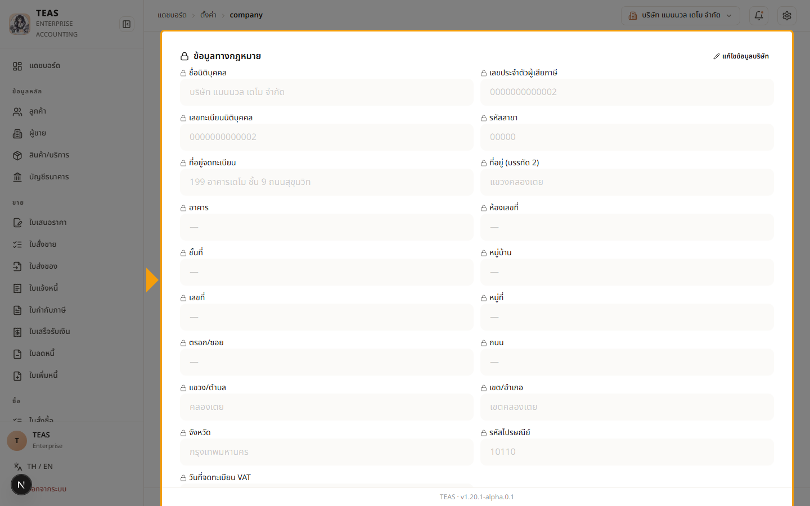
Section "ข้อมูลทางกฎหมาย" 🔒 — 11 fields ทั้งหมด disabled+readOnly. ตัวอย่าง: ชื่อนิติบุคคล "บริษัท แมนนวล เดโม จำกัด", เลขผู้เสียภาษี 0000000000002, ที่อยู่ "199 อาคารเดโม ชั้น 9 ถนนสุขุมวิท", จังหวัดกรุงเทพ, รหัสไปรษณีย์ 10110, วันที่จดทะเบียน VAT 2020-01-01. ไม่มีปุ่ม Save section นี้ (read-only by design)
ขั้นที่ 4
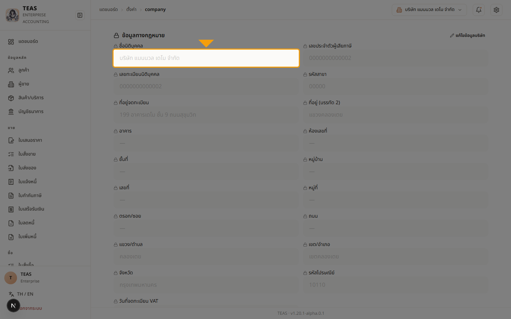
hover hard field → tooltip: "การเปลี่ยนข้อมูลนี้ต้องผ่านขั้นตอนพิเศษ — ติดต่อผู้ดูแลระบบหรือยื่น ภ.พ.09 ก่อน". อธิบายworkaround ให้ผู้ใช้ทราบทันทีโดยไม่ต้องไปอ่านคู่มือ
ขั้นที่ 5
Section "ข้อมูลติดต่อ + การชำระเงิน" — fields editable: ชื่อทางการค้า, โลโก้ URL, เบอร์ติดต่อ, อีเมล, เว็บไซต์, ผู้ติดต่อ, Banking (ธนาคาร / เลขที่บัญชี / ชื่อบัญชี). ปุ่ม "บันทึก" สำหรับ section นี้แยกต่างหาก
ขั้นที่ 6
กรอกตัวอย่าง — ชื่อทางการค้า "TEAS Manual Demo", เบอร์ "02-555-1234", อีเมล "contact@manualdemo.example.com"
ขั้นที่ 7
กด "บันทึก" → PUT /api/proxy/company-profile/soft → 204 → toast เขียว → fields ใหม่ persistent. Hard fields ไม่กระทบ (ดู section "ข้อมูลทางกฎหมาย" ด้านบน — ค่าเดิม)
ขั้นที่ 8
"โลโก้บริษัท" — อัปโหลดไฟล์ภาพได้โดยตรง (PNG / JPEG / SVG / WebP, ไม่เกิน 1 MB). ระบบเก็บเป็น attachment แล้ว embed โลโก้นี้ใน หัวกระดาษ PDF ของทุกใบกำกับภาษี / ใบเสร็จ / CN / DN. มีช่อง "URL โลโก้" และตัวอย่าง (preview) ให้ตรวจก่อนบันทึก
ขั้นที่ 9
"ทุนจดทะเบียนที่ชำระแล้ว" — ใช้จัดประเภท SME สำหรับภาษีเงินได้ นิติบุคคล (CIT): ทุน ≤ 5 ล้านบาท และรายได้ ≤ 30 ล้านบาท/ปี ได้อัตรา ลดหย่อนแบบขั้นบันได. ค่านี้อยู่บนข้อมูลหลักบริษัท — แก้ได้โดย super-admin
03.01 — สร้างลูกค้า
เงื่อนไขก่อนใช้งาน: login ในฐานะผู้มีสิทธิ์ master.customer.manage (admin)
ลูกค้า (Customer) คือ master data ที่ใช้เป็น "ผู้ซื้อ" ในทุกเอกสารขาย
(ใบเสนอราคา → ใบกำกับภาษี → ใบเสร็จ). ต้องสร้างลูกค้าก่อนจึงจะออกเอกสารให้ได้.
ฟอร์มแบ่งเป็น 4 ส่วน:
- ข้อมูลทั่วไป — รหัสลูกค้า*, ชื่อ (ไทย)*, ชื่อ (อังกฤษ), ประเภท (บุคคลธรรมดา / นิติบุคคล)
- ข้อมูลภาษี — จดทะเบียน VAT, เลขประจำตัวผู้เสียภาษี, รหัสสาขา
- ที่อยู่ / ผู้ติดต่อ — ที่อยู่ออกใบกำกับ, ผู้ติดต่อ, โทรศัพท์, อีเมล
- เงื่อนไขการค้า — วงเงินเครดิต, เครดิตเทอม, สกุลเงิน
สำคัญ (กฎหมาย ม.86/4): ถ้าลูกค้าจดทะเบียน VAT ต้องกรอก เลขประจำตัวผู้เสียภาษี
(13 หลัก) + รหัสสาขา (5 หลัก, 00000 = สำนักงานใหญ่) เพราะข้อมูลนี้ต้องพิมพ์
ลงบนใบกำกับภาษีของผู้ซื้อที่เป็นผู้ประกอบการ VAT.
ขั้นที่ 1
 หน้า "ลูกค้า" — รายการลูกค้าทั้งหมด. คอลัมน์: รหัส, ชื่อ, ประเภท, เลขผู้เสียภาษี, สถานะ. ปุ่ม "เพิ่มลูกค้า" มุมขวาบนเปิดฟอร์มสร้างใหม่
หน้า "ลูกค้า" — รายการลูกค้าทั้งหมด. คอลัมน์: รหัส, ชื่อ, ประเภท, เลขผู้เสียภาษี, สถานะ. ปุ่ม "เพิ่มลูกค้า" มุมขวาบนเปิดฟอร์มสร้างใหม่
ขั้นที่ 2
 ฟอร์ม "เพิ่มลูกค้าใหม่" — 4 ส่วน: ข้อมูลทั่วไป, ข้อมูลภาษี, ที่อยู่/ผู้ติดต่อ, เงื่อนไขการค้า. ช่องที่มี * คือบังคับ (รหัส + ชื่อไทย)
ฟอร์ม "เพิ่มลูกค้าใหม่" — 4 ส่วน: ข้อมูลทั่วไป, ข้อมูลภาษี, ที่อยู่/ผู้ติดต่อ, เงื่อนไขการค้า. ช่องที่มี * คือบังคับ (รหัส + ชื่อไทย)
ขั้นที่ 3
 กรอกข้อมูลทั่วไป — รหัส "MC-R8Y8H" + ชื่อไทย. ลูกค้าที่ จดทะเบียน VAT (สวิตช์ "จดทะเบียน VAT" ในส่วนข้อมูลภาษี เปิดเป็นค่าตั้งต้น) ต้องกรอกเลขผู้เสียภาษี 13 หลัก + รหัสสาขา (ม.86/4). เสร็จแล้วกด "บันทึก" ลูกค้าจะพร้อมใช้ในเอกสารขายทันที
กรอกข้อมูลทั่วไป — รหัส "MC-R8Y8H" + ชื่อไทย. ลูกค้าที่ จดทะเบียน VAT (สวิตช์ "จดทะเบียน VAT" ในส่วนข้อมูลภาษี เปิดเป็นค่าตั้งต้น) ต้องกรอกเลขผู้เสียภาษี 13 หลัก + รหัสสาขา (ม.86/4). เสร็จแล้วกด "บันทึก" ลูกค้าจะพร้อมใช้ในเอกสารขายทันที
03.02 — สร้างผู้ขาย
เงื่อนไขก่อนใช้งาน: login ในฐานะผู้มีสิทธิ์ master.vendor.manage (admin)
ผู้ขาย (Vendor) คือ master data ฝั่งซื้อ — ใช้เป็นคู่ค้าในใบสั่งซื้อ,
ใบกำกับภาษีซื้อ, และใบสำคัญจ่าย. การตั้งค่าผู้ขายให้ถูกต้องสำคัญต่อ
ภาษีซื้อ (Input VAT) ที่ขอคืนได้ และ ภาษีหัก ณ ที่จ่าย (WHT).
ฟอร์มรองรับเคสพิเศษที่กระทบภาษีอัตโนมัติ:
- ผู้ขายจดทะเบียน VAT / ไม่จด — non-VAT (รายได้ < 1.8 ล้าน หรือบุคคลธรรมดา)
ออกได้แค่ใบเสร็จ, เคลม Input VAT ไม่ได้, แต่ยังหัก WHT ได้ปกติ
- ผู้ขายต่างประเทศ — ถ้ายังไม่จด VAT-D ในไทย ระบบจะ default หัก WHT 15% (ม.70)
- self-assess VAT 7% (ภ.พ.36) ตอนสร้าง PV/VI ให้อัตโนมัติ
กรอกข้อมูลให้ถูกตั้งแต่สร้าง → ระบบคิดภาษีตอนทำเอกสารซื้อให้ถูกเอง.
ขั้นที่ 1
หน้า "ผู้ขาย" — รายการผู้ขายทั้งหมด. ปุ่ม "เพิ่มผู้ขาย" มุมขวาบนเปิดฟอร์มสร้างใหม่
ขั้นที่ 2
ฟอร์ม "เพิ่มผู้ขาย" — รหัสผู้ขาย*, ประเภท (นิติบุคคล/บุคคลธรรมดา), ชื่อ*, เลขผู้เสียภาษี, รหัสสาขา, เครดิต, ที่อยู่ + ข้อมูลการชำระเงิน (ธนาคาร/เลขบัญชี). มีสวิตช์ "Vendor ต่างประเทศ" / "จด VAT" สำหรับเคสพิเศษ
ขั้นที่ 3
กรอกรหัส "MV-QY7D4" + ชื่อไทย. เลือกประเภท/สวิตช์ VAT ให้ตรง กับสถานะจริงของผู้ขาย เพราะมีผลต่อการคิด Input VAT + WHT ตอนทำเอกสารซื้อ. กด "บันทึกผู้ขาย" เพื่อเพิ่มเข้า master
03.04 — หมวดค่าใช้จ่าย
เงื่อนไขก่อนใช้งาน: login ในฐานะผู้มีสิทธิ์ sys.expense_category.manage (admin)
หมวดค่าใช้จ่าย (Expense Category) ใช้ติดป้ายให้แต่ละบรรทัดค่าใช้จ่ายในใบสำคัญจ่าย
(PV) / ใบกำกับภาษีซื้อ (VI) เพื่อให้ระบบรู้ 2 เรื่องสำคัญทางภาษี:
| คอลัมน์ |
ความหมาย |
| ภาษีซื้อขอคืนได้ |
ภาษีซื้อ (Input VAT) ของหมวดนี้นำไปหักใน ภ.พ.30 ได้หรือไม่ (บางรายการต้องห้าม เช่น ค่ารับรอง) |
| สินทรัพย์ถาวร (CAPEX) |
เป็นสินทรัพย์ที่ต้องตัดค่าเสื่อม (ไม่ใช่ค่าใช้จ่ายทันที) สำหรับภาษีเงินได้นิติบุคคล |
ตั้งหมวดผิด → ขอคืนภาษีซื้อผิด หรือบันทึกค่าใช้จ่าย/สินทรัพย์ผิด → กระทบ ภ.พ.30
และงบการเงิน. ใน Phase 1 หมวดมาจากชุดมาตรฐานที่ระบบ seed ให้ (อ่านอย่างเดียว).
ขั้นที่ 1
หน้า "หมวดค่าใช้จ่าย" — รายการหมวดมาตรฐานที่ระบบเตรียมให้. คอลัมน์: รหัส, ชื่อหมวด, ภาษีซื้อขอคืนได้, สินทรัพย์ถาวร (CAPEX)
ขั้นที่ 2
2 คอลัมน์ขวาคือหัวใจ — "ภาษีซื้อขอคืนได้" บอกว่า Input VAT ของหมวดนี้หักใน ภ.พ.30 ได้ไหม, "CAPEX" บอกว่าต้องตัดค่าเสื่อมแทนการ ลงค่าใช้จ่ายทันที. ตอนทำใบสำคัญจ่าย/ใบกำกับภาษีซื้อจะเลือกหมวดเหล่านี้
03.05 — พนักงาน (สำหรับเงินเดือน)
เงื่อนไขก่อนใช้งาน: login ในฐานะผู้มีสิทธิ์ master.employee.manage (admin)
พนักงาน (Employee) คือ master data ที่งานเงินเดือน (Payroll) ใช้คำนวณ:
- เงินเดือน + เงินได้อื่น
- ภาษีหัก ณ ที่จ่าย (ภ.ง.ด.1) — คำนวณจากเงินเดือน, สถานภาพสมรส, จำนวนบุตร,
คู่สมรสมีเงินได้หรือไม่ (ค่าลดหย่อน)
- ประกันสังคม (ม.33) — ถ้าพนักงานอยู่ในระบบประกันสังคม
ฟอร์มเก็บ: รหัสพนักงาน, คำนำหน้า/ชื่อ/นามสกุล, เลขบัตรประชาชน (13 หลัก),
เงินเดือน, วันเริ่มงาน, สถานภาพสมรส + ค่าลดหย่อน, ข้อมูลธนาคาร (รับเงินเดือน),
และที่อยู่. ตั้งให้ครบเพื่อให้รอบเงินเดือน (บทที่ 6) คำนวณภาษีได้ถูกต้อง.
ขั้นที่ 1
หน้า "พนักงาน (Payroll)" — รายชื่อพนักงานที่ใช้คำนวณเงินเดือน. ปุ่ม "เพิ่มพนักงาน" เปิดฟอร์มกรอกข้อมูลใหม่
ขั้นที่ 2
ฟอร์ม "เพิ่มพนักงาน" — คำนำหน้า/ชื่อ/นามสกุล, เลขบัตรประชาชน (13 หลัก), เงินเดือน, วันเริ่มงาน, สถานภาพสมรส + จำนวนบุตร (ค่าลดหย่อน ภ.ง.ด.1), ประกันสังคม (ม.33), และเลขบัญชีธนาคารสำหรับรับเงินเดือน. กรอกครบแล้วกด "บันทึก" — พนักงานจะถูกดึงเข้ารอบเงินเดือนอัตโนมัติ (บทที่ 6)
04.01 — ออกใบเสนอราคา
เงื่อนไขก่อนใช้งาน: login ในฐานะผู้มีสิทธิ์ sales.quotation.create + .send (admin) · มีลูกค้า + หน่วยธุรกิจ ในระบบ (บทที่ 2–3)
ใบเสนอราคา (Quotation) คือเอกสารแรกของสายงานขาย — เสนอราคาสินค้า/บริการให้ลูกค้า
พิจารณาก่อนตัดสินใจซื้อ. ยัง ไม่ใช่เอกสารทางภาษี จึงแก้ไขหรือยกเลิกได้ และยัง
ไม่เกิดภาระภาษีขาย.
สายงานขายเต็มรูป (document chain):
ใบเสนอราคา → ใบสั่งขาย → ใบส่งของ → ใบแจ้งหนี้ → ใบกำกับภาษี → ใบเสร็จรับเงิน
แต่ละขั้นอ้างอิงเอกสารต้นทางได้ ทำให้ตรวจสอบย้อนกลับ (audit trail) ได้ครบ. ใบกำกับภาษี
คือจุดที่เกิดภาระภาษีและตรึงถาวร (ดู 04.04). บทนี้เริ่มจากต้นทาง.
สิ่งที่กรอกในใบเสนอราคา: ลูกค้า · วันที่ + วันที่ยืนราคา (ค่าเริ่มต้น +30 วัน) ·
หน่วยธุรกิจ (บริษัทตัวอย่างตั้งให้บังคับในเอกสารรายได้) · รายการสินค้า/บริการ พร้อม
ราคาและภาษีมูลค่าเพิ่มที่คำนวณให้อัตโนมัติในตัวอย่างเอกสารด้านขวา.
ขั้นที่ 1
ฟอร์ม "สร้างใบเสนอราคา" — ซ้ายเป็นช่องกรอก 4 ส่วน (① ลูกค้า, ② ข้อมูลเอกสาร, ③ รายการ, ④ หมายเหตุ) ขวาเป็นตัวอย่างเอกสาร A4 ที่อัปเดตสด ตามที่กรอก
ขั้นที่ 2
กด "เลือกลูกค้า" → ค้นหา → เลือก "บริษัท แอคมี จำกัด". ระบบดึงชื่อ และที่อยู่มาแสดงในตัวอย่างเอกสารด้านขวาทันที
ขั้นที่ 3
เลือก "หน่วยธุรกิจ" (บริษัทตัวอย่างตั้งค่าให้บังคับระบุในเอกสาร รายได้ — ดู 02.01). วันที่และ "ยืนราคาถึง" มีค่าเริ่มต้นให้ (+30 วัน) แก้ได้
ขั้นที่ 4
กรอกรายการ — "ค่าออกแบบและพัฒนาเว็บไซต์" จำนวน 1 ราคา 50,000. กล่องสรุปคำนวณ มูลค่าก่อนภาษี + ภาษีมูลค่าเพิ่ม 7% = รวมทั้งสิ้น ให้อัตโนมัติ
ขั้นที่ 5
กด "ออกใบเสนอราคา" → ระบบออกเลขที่เอกสารและเปลี่ยนสถานะเป็น "ส่งแล้ว". จากหน้านี้พิมพ์ PDF ส่งลูกค้า หรือแปลงเป็นใบสั่งขายต่อได้
04.02 — ใบสั่งขาย และ ใบส่งของ
เงื่อนไขก่อนใช้งาน: login admin (สิทธิ์ sales_order + delivery_order) · มีลูกค้า + หน่วยธุรกิจ ในระบบ
หลังลูกค้าตอบรับใบเสนอราคา ขั้นถัดไปคือ:
- ใบสั่งขาย (Sales Order) — บันทึกคำสั่งซื้อที่ยืนยันแล้ว (จำนวน/ราคา/หน่วยธุรกิจ).
เป็นเอกสารภายในที่ผูกราคาไว้ ใช้เป็นฐานในการจัดส่งและออกใบกำกับภาษีต่อไป.
- ใบส่งของ (Delivery Order) — หลักฐานการส่งมอบสินค้า/บริการ. เป็นเอกสาร
non-fiscal คือ ไม่มีราคาและภาษี (แสดงเฉพาะรายการ + จำนวน + หน่วยนับ).
ที่อยู่จัดส่งและผู้รับสินค้าบันทึกในช่องหมายเหตุ.
ทั้งสองอ้างอิงเอกสารต้นทางได้ และในงานจริงนิยม "แปลง" ต่อกัน (ใบเสนอราคา → ใบสั่งขาย,
ใบสั่งขาย → ใบส่งของ) ผ่านปุ่มบนหน้ารายละเอียด. ที่นี่แสดงการสร้างฟอร์มใหม่โดยตรง.
ขั้นที่ 1
ฟอร์ม "สร้างใบสั่งขาย" — โครงเดียวกับใบเสนอราคา (ลูกค้า / ข้อมูลเอกสาร / รายการ) พร้อมตัวอย่างเอกสารด้านขวา
ขั้นที่ 2
เลือกลูกค้า "บริษัท แอคมี จำกัด" + หน่วยธุรกิจ + กรอกรายการ (10 × 3,500). ตัวอย่างเอกสารคำนวณมูลค่าก่อนภาษี 35,000 + VAT 7% อัตโนมัติ
ขั้นที่ 3
กด "ยืนยันสั่งขาย" → ระบบออกเลขที่เอกสารและยืนยันใบสั่งขาย (สถานะ "บันทึกแล้ว" = ยืนยัน/โพสต์แล้ว เห็นเป็นแถวบนสุดของรายการ). พร้อมจัดส่งและออกใบกำกับภาษีต่อ
ขั้นที่ 4
ฟอร์ม "สร้างใบส่งของ" — สังเกตตารางรายการ "ไม่มีคอลัมน์ราคา/ภาษี" เพราะใบส่งของเป็นเอกสารส่งมอบ ไม่ใช่เอกสารเรียกเงิน (non-fiscal)
ขั้นที่ 5
เลือกลูกค้าเดิม + หน่วยธุรกิจ + กรอกรายการที่ส่งมอบ (จำนวน + หน่วยนับ เท่านั้น ไม่มีราคา). ที่อยู่จัดส่ง/ผู้รับสินค้าระบุในส่วนหมายเหตุด้านล่าง
ขั้นที่ 6
กด "ออกใบส่งของ" → ระบบออกเลขที่เอกสารและบันทึกใบส่งของ (เห็นแถว บนสุด). เมื่อยืนยัน "ส่งมอบแล้ว" ระบบจะออกใบกำกับภาษีให้ในขั้นถัดไปอัตโนมัติ
04.03 — ออกใบแจ้งหนี้ / ใบวางบิล
เงื่อนไขก่อนใช้งาน: login admin (สิทธิ์ billing_note) · มีลูกค้า + หน่วยธุรกิจ ในระบบ
ใบแจ้งหนี้ / ใบวางบิล (Billing Note) คือเอกสาร เรียกเก็บเงิน ที่ส่งให้ลูกค้าเพื่อ
แจ้งยอดที่ต้องชำระและกำหนดวันครบกำหนด.
ใช้งานได้ 2 แบบ:
- รวมใบกำกับภาษีหลายใบ — กิจการที่ส่งของหลายครั้งในเดือน แล้ววางบิลรวมครั้งเดียว
สามารถเลือกใบกำกับภาษีที่ออกไว้แล้วมารวมในใบแจ้งหนี้ใบเดียว.
- ออกพร้อมรายการของตัวเอง — กรอกรายการสินค้า/บริการลงในใบแจ้งหนี้โดยตรง
(เหมือนใบเสนอราคา) ตามที่บทนี้แสดง.
เมื่อลูกค้าชำระเงิน จะออก ใบเสร็จรับเงิน อ้างอิงใบแจ้งหนี้/ใบกำกับภาษีนี้ (ดู 04.05).
มีช่อง "วันที่ครบกำหนด" (ค่าเริ่มต้น +30 วัน) เพื่อติดตามลูกหนี้.
ขั้นที่ 1
ฟอร์ม "สร้างใบแจ้งหนี้" — มีส่วนลูกค้า, ข้อมูลเอกสาร (วันที่ + วันที่ครบกำหนด), รายการ และตัวเลือกจัดกลุ่มใบกำกับภาษี พร้อมตัวอย่างเอกสารด้านขวา
ขั้นที่ 2
เลือกลูกค้า "บริษัท แอคมี จำกัด" + หน่วยธุรกิจ. "วันที่ครบกำหนด" ตั้งค่าเริ่มต้นเป็น +30 วัน ใช้ติดตามลูกหนี้ที่ยังไม่ชำระ
ขั้นที่ 3
กรอกรายการ — "ค่าบริการดูแลระบบรายเดือน" 25,000. กล่องสรุป คำนวณมูลค่าก่อนภาษี + ภาษีมูลค่าเพิ่ม 7% = ยอดเรียกเก็บรวม อัตโนมัติ
ขั้นที่ 4
กด "ออกใบแจ้งหนี้" → ระบบออกเลขที่เอกสารและบันทึกใบแจ้งหนี้สถานะ "ออกแล้ว". จากหน้านี้พิมพ์ PDF ส่งลูกค้า, กด "ออกใบกำกับภาษี" เพื่อออกเอกสารภาษี, หรือ "ยืนยันชำระเงินครบแล้ว" เมื่อได้รับเงิน (การออกใบเสร็จ ดู 04.05)
04.04 — ออกและโพสต์ใบกำกับภาษี
เงื่อนไขก่อนใช้งาน: login ในฐานะผู้มีสิทธิ์ sales.tax_invoice.create + .post (admin) · มีลูกค้าจด VAT + หน่วยธุรกิจ ในระบบ (บทที่ 2–3)
ใบกำกับภาษี (Tax Invoice) คือเอกสารทางภาษีที่สำคัญที่สุดของกิจการ VAT —
ออกเมื่อขายสินค้า/บริการให้ผู้ซื้อ และเป็นหลักฐานภาษีขาย (Output VAT).
กฎหมาย ม.86/4 — ใบกำกับภาษีเต็มรูปต้องมีครบ 8 รายการ:
- คำว่า "ใบกำกับภาษี" เด่นชัด
- ชื่อ-ที่อยู่-เลขผู้เสียภาษี (13 หลัก) + สาขาของผู้ขาย
- ชื่อ-ที่อยู่-เลขผู้เสียภาษีของผู้ซื้อ เมื่อผู้ซื้อจด VAT
- เลขที่เอกสารเรียงลำดับ ห้ามขาดช่วง (gapless)
- ชื่อ/ชนิด/ปริมาณ/มูลค่าของสินค้าแต่ละบรรทัด
- แยกแสดงภาษีมูลค่าเพิ่ม (VAT) ออกจากมูลค่าสินค้า
- วันที่ออก = วันที่จุดความรับผิดทางภาษี (tax point)
- ข้อความอื่นตามที่กำหนด
การ Post (โพสต์): ตอนกด Post ระบบจะออกเลขที่เอกสารตามลำดับเดือน (ไม่ขาดช่วง)
และ ตรึงข้อมูลถาวร — แก้/ลบไม่ได้อีก (ม.86 + พรบ.การบัญชี). หากออกผิด ต้อง
แก้ด้วย ใบลดหนี้ (Credit Note) แล้วออกใบใหม่ ไม่ใช่แก้ใบเดิม.
ขั้นที่ 1
ฟอร์ม "สร้างใบกำกับภาษี" — 3 ส่วน: ① ลูกค้า, ② ข้อมูลเอกสาร (วันที่ออก = วันนี้ ล็อกไว้ตามกฎ tax point + หน่วยธุรกิจ), ③ รายการสินค้า /บริการ พร้อมยอดรวมและภาษีแยกบรรทัด
ขั้นที่ 2
กด "เลือกลูกค้า" → ค้นหาด้วยชื่อหรือเลขผู้เสียภาษี → เลือก "บริษัท แอคมี จำกัด" (ลูกค้าจด VAT). ระบบดึงชื่อ + เลขผู้เสียภาษี 13 หลัก ของผู้ซื้อมาแสดง — ข้อมูลนี้จะพิมพ์ลงใบกำกับภาษี (ม.86/4 #3)
ขั้นที่ 3
เลือก "หน่วยธุรกิจ" (บริษัทนี้ตั้งค่าให้บังคับระบุในเอกสารรายได้ — ดูบท 02.01). หน่วยธุรกิจช่วยแยกยอดขาย/รายงานตามสายงาน
ขั้นที่ 4
กรอกรายการ — "ค่าบริการที่ปรึกษาระบบบัญชี" จำนวน 1 ราคา 10,000. กล่องยอดรวมคำนวณให้อัตโนมัติ: มูลค่าก่อนภาษี 10,000 + ภาษีมูลค่าเพิ่ม 7% = 700 → รวมทั้งสิ้น 10,700. สังเกตว่า VAT แสดง "แยก" ตาม ม.86/4 #6
ขั้นที่ 5
กด "บันทึกเอกสาร" → กล่องยืนยันเตือนว่า การโพสต์จะออกเลขที่ เอกสารถาวรและ "แก้ไขไม่ได้อีก". ตรวจข้อมูลให้ครบถูกก่อนยืนยัน เพราะแก้ทีหลัง ต้องทำผ่านใบลดหนี้เท่านั้น
ขั้นที่ 6
โพสต์สำเร็จ → ระบบออกเลขที่เอกสารตามลำดับเดือน (รูปแบบ MM-YYYY-PREFIX-NNNN, ไม่ขาดช่วง) และเปลี่ยนสถานะเป็น "โพสต์แล้ว". เอกสารนี้ตรึงถาวร — พิมพ์ PDF / ส่ง e-Tax / ออกใบเสร็จอ้างอิงได้ต่อไป
04.05 — รับชำระเงินและออกใบเสร็จ
เงื่อนไขก่อนใช้งาน: login admin (สิทธิ์ tax_invoice + receipt) · มีลูกค้าจด VAT ในระบบ
ใบเสร็จรับเงิน (Receipt) คือหลักฐานการรับชำระเงินจากลูกค้า. ในระบบ VAT ใบเสร็จจะ
อ้างอิงใบกำกับภาษี ที่ออกไว้ (ซึ่งตรึงถาวรแล้ว) เพื่อปิดยอดลูกหนี้ของใบนั้น.
วิธีที่สะดวกที่สุด คือออกใบเสร็จจากหน้ารายละเอียดใบกำกับภาษีโดยตรง — กดปุ่ม
"สร้างใบเสร็จ" แล้วระบบจะดึง ลูกค้า + ใบกำกับภาษี + ยอดเงิน มากรอกให้อัตโนมัติ
ไม่ต้องพิมพ์ซ้ำ.
ภาษีหัก ณ ที่จ่าย (WHT): ถ้าลูกค้าเป็นนิติบุคคลและหักภาษี ณ ที่จ่าย ใบเสร็จมีส่วน
ให้ระบุยอดหัก → ระบบคำนวณ "เงินที่รับจริง = ยอดรวม − ภาษีหัก ณ ที่จ่าย" ให้.
บทนี้แสดงกรณีรับเต็มจำนวน (ไม่มีการหัก).
ขั้นที่ 1
ใบกำกับภาษีที่โพสต์แล้ว (ยอดรวม 10,700, ยังไม่ชำระ). มุมขวาบนมีปุ่ม "สร้างใบเสร็จ" สำหรับออกใบเสร็จอ้างอิงใบนี้ทันที
ขั้นที่ 2
ฟอร์มใบเสร็จเปิดขึ้นพร้อมข้อมูล "ดึงมาให้แล้ว" — ลูกค้า "บริษัท แอคมี จำกัด", ใบกำกับภาษีต้นทาง และยอดเงิน 10,700. ไม่ต้องกรอกซ้ำ
ขั้นที่ 3
เลือก "หน่วยธุรกิจ". ส่วน "หัก ณ ที่จ่าย" ปิดอยู่ (รับเต็มจำนวน) → เงินที่รับจริง = ยอดรวม 10,700. หากลูกค้าหักภาษี ณ ที่จ่าย ให้เปิดสวิตช์แล้วระบุประเภทเงินได้
ขั้นที่ 4
กด "บันทึกเอกสาร" → กล่องยืนยันสรุปยอดและเตือนว่าใบเสร็จจะถูกบันทึก ถาวร. ตรวจยอดก่อนยืนยัน
ขั้นที่ 5
ใบเสร็จออกเลขที่เอกสารแล้ว (สถานะ "บันทึกแล้ว") และอ้างอิงใบกำกับภาษี ต้นทางใน "เอกสารอ้างอิง". ผลคือยอดลูกหนี้ของใบกำกับภาษีต้นทางถูกปิด — ใบกำกับภาษี นั้นเปลี่ยนสถานะการชำระเงินเป็น "ชำระแล้ว"
04.06 — ออกใบลดหนี้ (แก้ไขใบกำกับภาษี)
เงื่อนไขก่อนใช้งาน: login admin (สิทธิ์ tax_invoice + credit_note) · มีใบกำกับภาษีที่โพสต์แล้วของลูกค้ารายนั้น
ใบกำกับภาษีที่โพสต์แล้ว ตรึงถาวร แก้ไข/ลบไม่ได้ (ม.86 + พรบ.การบัญชี). เมื่อมี
เหตุต้องปรับยอดหลังออกใบกำกับภาษี กฎหมายกำหนดให้ออกเอกสารใหม่อ้างอิงใบเดิม:
- ใบลดหนี้ (Credit Note) — ม.86/10 ใช้เมื่อ "ลดยอด": ลูกค้าคืนสินค้า, ลดราคาหลังขาย,
คำนวณเรียกเก็บเกิน, สินค้าชำรุด.
- ใบเพิ่มหนี้ (Debit Note) — ม.86/9 ใช้เมื่อ "เพิ่มยอด": เรียกเก็บขาด, ส่งของเพิ่ม.
ทั้งสองอ้างอิงใบกำกับภาษีเดิมเสมอ และ คัดลอกผู้ซื้อจากใบเดิม (ออกใบลดหนี้ให้คนอื่นไม่ได้).
อัตราภาษีถูกล็อกตามใบกำกับภาษีเดิม (7%) และแสดงภาษีแยกออกจากมูลค่าตามกฎ. บทนี้แสดง
"ใบลดหนี้" เป็นตัวอย่าง.
ขั้นที่ 1
ฟอร์ม "ใบลดหนี้ (ม.86/10)" — ① อ้างอิงใบกำกับภาษีเดิม, ② เหตุผล (บังคับตามกฎหมาย) + หน่วยธุรกิจ, ③ มูลค่าที่ปรับ. ผู้ซื้อจะคัดลอกจากใบเดิมอัตโนมัติ
ขั้นที่ 2
ค้นหาและเลือก "ใบกำกับภาษีเดิม" (แสดงเฉพาะใบที่โพสต์แล้ว). ระบบดึง ผู้ซื้อ + อัตราภาษีจากใบนั้นมา และล็อกอัตราภาษีไว้ที่ 7% ตามใบเดิม
ขั้นที่ 3
ระบุ "เหตุผล" (กฎหมายบังคับให้มีเหตุผลในใบลดหนี้) + หน่วยธุรกิจ + "มูลค่าที่ปรับ" 5,000. กล่องสรุปคำนวณภาษีมูลค่าเพิ่ม 7% = 350 แยกออกจากมูลค่า
ขั้นที่ 4
กด "บันทึกเอกสาร" → กล่องยืนยันสรุปยอดลดหนี้ + ภาษี. เมื่อโพสต์แล้ว ใบลดหนี้จะตรึงถาวรเช่นเดียวกับใบกำกับภาษี
ขั้นที่ 5
ใบลดหนี้ออกเลขที่เอกสารแล้ว อ้างอิงใบกำกับภาษีเดิม (เห็นใน "เอกสารอ้างอิง") พร้อมเหตุผลและมูลค่าที่ลด. นี่คือวิธี "แก้ไข" ใบกำกับภาษี ที่ถูกต้องตามกฎหมาย — ออกเอกสารใหม่ ไม่ใช่แก้ใบเดิม
04.07 — ออกใบเพิ่มหนี้ (แก้ไขใบกำกับภาษี)
เงื่อนไขก่อนใช้งาน: login admin (สิทธิ์ tax_invoice + debit_note) · มีใบกำกับภาษีที่โพสต์แล้วของลูกค้ารายนั้น
ใบเพิ่มหนี้ (Debit Note) — ม.86/9 เป็นคู่ตรงข้ามของใบลดหนี้ (04.06): ใช้เมื่อต้อง
เพิ่มยอด จากใบกำกับภาษีที่ออกไปแล้ว เช่น เรียกเก็บขาด, ส่งสินค้าเพิ่ม, หรือคิดราคา
ต่ำกว่าจริง.
เนื่องจากใบกำกับภาษีที่โพสต์แล้ว แก้ไขไม่ได้ (ม.86 + พรบ.การบัญชี §4.2) การปรับยอด
ขึ้นจึงต้องออกเอกสารใหม่อ้างอิงใบเดิม ไม่ใช่แก้ใบเดิม. ฟอร์มและขั้นตอนเหมือนใบลดหนี้
ทุกประการ — ต่างเพียง ทิศทาง (เพิ่ม) และ รายการเหตุผล. ผู้ซื้อและอัตราภาษี (7%)
คัดลอก/ล็อกจากใบกำกับภาษีเดิม และแสดงภาษีแยกออกจากมูลค่า.
ขั้นที่ 1
ฟอร์ม "ใบเพิ่มหนี้ (ม.86/9)" — โครงเดียวกับใบลดหนี้: ① อ้างอิงใบกำกับ ภาษีเดิม, ② เหตุผล (บังคับ) + หน่วยธุรกิจ, ③ มูลค่าที่ปรับเพิ่ม
ขั้นที่ 2
เลือก "ใบกำกับภาษีเดิม" (เฉพาะใบที่โพสต์แล้ว). ระบบดึงผู้ซื้อ + อัตราภาษีจากใบนั้น และล็อกอัตราภาษีไว้ที่ 7% ตามใบเดิม
ขั้นที่ 3
ระบุ "เหตุผล" (บังคับ) + หน่วยธุรกิจ + "มูลค่าที่ปรับเพิ่ม" 3,000. กล่องสรุปคำนวณภาษีมูลค่าเพิ่ม 7% = 210 แยกออกจากมูลค่า รวม 3,210
ขั้นที่ 4
กด "บันทึกเอกสาร" → กล่องยืนยันสรุปยอดเพิ่มหนี้ + ภาษี. เมื่อโพสต์แล้ว ใบเพิ่มหนี้จะตรึงถาวรเช่นเดียวกับใบกำกับภาษี
ขั้นที่ 5
ใบเพิ่มหนี้ออกเลขที่เอกสารแล้ว อ้างอิงใบกำกับภาษีเดิมใน "เอกสารอ้างอิง" พร้อมเหตุผลและมูลค่าที่เพิ่ม — วิธีปรับยอด "ขึ้น" ที่ถูกต้องตามกฎหมาย
04.08 — เลือกสินค้า/บริการในเอกสาร
เงื่อนไขก่อนใช้งาน: login admin · มีข้อมูลหลักสินค้า/บริการในระบบ (02.02)
ทุกเอกสารที่มี "รายการสินค้า/บริการ" (ใบเสนอราคา, ใบกำกับภาษี, ใบสั่งซื้อ, ใบสำคัญจ่าย ฯลฯ)
ใช้ช่องเลือกสินค้า/บริการแบบเดียวกัน — แต่ละบรรทัดมีปุ่ม "เลือกจากรายการ" (🔍) เปิด
หน้าต่างค้นหาจาก ข้อมูลหลักสินค้า (Product Master, ดู 02.02).
เลือกจาก master ได้อะไร: ระบบดึง ชื่อ + รหัส + ราคาตั้งต้น + หน่วยนับ + ประเภท มาเติม
ให้อัตโนมัติ ไม่ต้องพิมพ์ซ้ำและลดความผิดพลาด. ถ้าเป็นรายการเฉพาะกิจที่ไม่มีใน master
ก็ พิมพ์รายละเอียดเองได้ (ad-hoc) โดยไม่ต้องสร้างสินค้าใหม่.
ประเภทสินค้า/บริการ → ผลทาง VAT:
| ประเภท |
ป้าย |
VAT |
| สินค้า (GOOD) |
🟦 สินค้า |
7% |
| บริการ (SERVICE) |
🟪 บริการ |
7% |
| สินค้า/บริการยกเว้น (EXEMPT) |
🟧 ยกเว้น VAT |
0% (ม.81) เช่น สัตว์มีชีวิต พืชผลเกษตร |
ระบบ คิด VAT ให้ตามประเภทอัตโนมัติ — เลือกสินค้ายกเว้นแล้วบรรทัดนั้นจะไม่มี VAT ทันที
โดยผู้ใช้ไม่ต้องตั้งเอง (กันออกภาษีผิดประเภท).
ขั้นที่ 1
ในส่วน "รายการ" ของเอกสาร แต่ละบรรทัดมีช่องรายละเอียด + ปุ่มแว่นขยาย "เลือกจากรายการ" สำหรับดึงสินค้า/บริการจากข้อมูลหลัก (หรือจะพิมพ์เองก็ได้)
ขั้นที่ 2
หน้าต่าง "เลือกสินค้า / บริการ" — ค้นหาด้วยชื่อหรือรหัส. แต่ละรายการ แสดง รหัส · ชื่อ · ป้ายประเภท (สินค้า/บริการ/ยกเว้น VAT) · ราคาตั้งต้น
ขั้นที่ 3
เลือกบริการ "ค่าที่ปรึกษา" → ระบบเติมชื่อ + ราคาตั้งต้น (2,000) + หน่วยนับให้อัตโนมัติ และตั้งอัตราภาษีเป็น 7% เพราะเป็นประเภท "บริการ"
ขั้นที่ 4
เลือกสินค้ายกเว้น VAT "เต่าบก (สัตว์มีชีวิต)" → อัตราภาษีของบรรทัด เปลี่ยนเป็น 0 อัตโนมัติ (ยกเว้น VAT ตาม ม.81). ระบบกันการคิดภาษีผิดประเภทให้เอง. รายการที่ไม่มีใน master ให้พิมพ์รายละเอียดเองได้
04.09 — ลูกค้าจด VAT vs ไม่จด VAT (ม.86/4)
เงื่อนไขก่อนใช้งาน: login admin (สิทธิ์ tax_invoice) · มีลูกค้าทั้งจด VAT และไม่จด VAT ในระบบ
ผู้ขายที่จด VAT ออกใบกำกับภาษีให้ผู้ซื้อได้ "ทุกราย" — แต่กฎ ม.86/4 #3 กำหนดให้ใส่
ชื่อ-ที่อยู่-เลขผู้เสียภาษีของผู้ซื้อ "เฉพาะเมื่อผู้ซื้อจด VAT":
- ผู้ซื้อจด VAT (นิติบุคคล/กิจการจด VAT) → ใบกำกับภาษีต้องมี เลขผู้เสียภาษี 13 หลัก +
สาขา ของผู้ซื้อ (เพื่อให้ผู้ซื้อเอาไปเคลมภาษีซื้อได้).
- ผู้ซื้อไม่จด VAT (บุคคลธรรมดา/ผู้บริโภคทั่วไป) → ไม่ต้องมีเลขผู้เสียภาษีผู้ซื้อ
(ใส่แค่ชื่อก็พอ) เพราะผู้ซื้อเคลมภาษีซื้อไม่ได้อยู่แล้ว.
ระบบดึงสถานะ VAT จากข้อมูลหลักลูกค้า (ดู 03.01) มาแสดง/ซ่อนเลขผู้เสียภาษีบนเอกสารให้เอง.
ขั้นที่ 1
ผู้ซื้อ "บริษัท แอคมี จำกัด" (จด VAT) → ตัวอย่างใบกำกับภาษีด้านขวาแสดง "เลขผู้เสียภาษี 13 หลัก + สาขา" ของผู้ซื้อ ตาม ม.86/4 #3 (ผู้ซื้อนำไปเคลมภาษีซื้อได้)
ขั้นที่ 2
เปลี่ยนผู้ซื้อเป็น "คุณสมชาย ใจดี" (บุคคลธรรมดา ไม่จด VAT) → บล็อกผู้ซื้อ บนเอกสารแสดงแค่ "ชื่อ" ไม่มีเลขผู้เสียภาษี (ม.86/4 #3 ไม่บังคับเมื่อผู้ซื้อไม่จด VAT). ยังเป็นใบกำกับภาษีเต็มรูปที่ถูกต้อง — VAT ยังคิด 7% ตามปกติ
04.10 — กิจการไม่จด VAT (non-VAT)
เงื่อนไขก่อนใช้งาน: login เป็นผู้ใช้ของกิจการที่ไม่จด VAT
สถานะ VAT เป็นข้อมูลของ "บริษัท" (ตั้งโดยผู้ดูแลระบบสูงสุด ตอนสร้างบริษัท — §4.6,
ดูบทที่ 0). กิจการที่ ไม่จด VAT มีระบบที่ต่างจากกิจการ VAT ดังนี้:
| เรื่อง |
กิจการจด VAT |
กิจการไม่จด VAT |
| ภาษีบนเอกสาร |
VAT 7% ทุกใบ |
ไม่มี VAT (ยอดรวม = ยอดก่อนภาษี) |
| ใบกำกับภาษี (ม.86) |
ออกได้ |
ออกไม่ได้ — ใช้ใบแจ้งหนี้/ใบเสร็จแทน |
| ใบลดหนี้/เพิ่มหนี้ |
มี |
ไม่มี (ผูกกับใบกำกับภาษี) |
| เมนูด้านซ้าย |
มีครบ |
ซ่อนเมนูที่เกี่ยวกับ VAT อัตโนมัติ |
| ภ.พ.30 / e-Tax |
ต้องยื่น |
ไม่เกี่ยวข้อง |
ระบบ ปรับให้อัตโนมัติ ตามสถานะบริษัท — ผู้ใช้ไม่ต้องตั้งค่าเอง และไม่มีปุ่มให้สลับ
โหมด VAT ในหน้าผู้ใช้ทั่วไป (กันออกเอกสารผิดประเภท).
ขั้นที่ 1
เมนูด้านซ้ายของกิจการไม่จด VAT — สังเกตว่า "ไม่มี" ใบกำกับภาษี / ใบลดหนี้ / ใบเพิ่มหนี้ (เมนูที่เกี่ยวกับ VAT ถูกซ่อนอัตโนมัติ ตาม ม.86). ยังขายของได้ผ่านใบเสนอราคา → ใบส่งของ → ใบแจ้งหนี้ → ใบเสร็จ
ขั้นที่ 2
ใบแจ้งหนี้ของกิจการไม่จด VAT — ตารางรายการ "ไม่มีคอลัมน์ VAT" และ ตัวอย่างเอกสารด้านขวา ยอดรวม = ยอดก่อนภาษี (2 × 1,500 = 3,000) ไม่มีบรรทัด ภาษีมูลค่าเพิ่ม. เทียบกับกิจการ VAT ที่จะมี VAT 7% เพิ่มทุกใบ
05.01 — ออกและอนุมัติใบสั่งซื้อ
เงื่อนไขก่อนใช้งาน: login admin (สิทธิ์ purchase_order create + approve) · มีผู้ขาย + หน่วยธุรกิจ ในระบบ (บทที่ 3)
ใบสั่งซื้อ (Purchase Order / PO) คือเอกสารแรกของงานซื้อ — ใช้สั่งซื้อสินค้า/บริการจาก
ผู้ขาย และเป็นเครื่องมือ ควบคุมการใช้จ่าย ภายในกิจการ (อนุมัติก่อนซื้อจริง).
สายงานซื้อเต็มรูป (document chain):
ใบสั่งซื้อ → บันทึกใบกำกับภาษีซื้อ (รับของ + ภาษีซื้อ) → ใบสำคัญจ่าย (จ่ายเงิน +
หัก ณ ที่จ่าย) → หนังสือรับรองหัก ณ ที่จ่าย (50ทวิ)
ขั้นตอนอนุมัติ (workflow): ใบสั่งซื้อสร้างเป็น "ฉบับร่าง" ก่อน แล้วต้อง อนุมัติ จึงจะ
ใช้งานต่อได้ — และระบบจะออก เลขที่เอกสาร (PO-NNNN) ตอนอนุมัติ เท่านั้น. ระบบนี้รองรับ
กิจการขนาดเล็กที่มีผู้ใช้คนเดียว (ผู้สร้างอนุมัติเองได้) แต่กิจการใหญ่สามารถแยกผู้สร้าง/
ผู้อนุมัติตามสิทธิ์ได้ (Segregation of Duties).
ขั้นที่ 1
 ฟอร์ม "สร้างใบสั่งซื้อ" — ส่วน ① ผู้ขาย, ② ข้อมูลเอกสาร (วันที่ + วันที่คาดว่าจะส่ง), ③ รายการ. ตัวอย่างเอกสารด้านขวาออกในนามบริษัทเรา ส่งถึงผู้ขาย
ฟอร์ม "สร้างใบสั่งซื้อ" — ส่วน ① ผู้ขาย, ② ข้อมูลเอกสาร (วันที่ + วันที่คาดว่าจะส่ง), ③ รายการ. ตัวอย่างเอกสารด้านขวาออกในนามบริษัทเรา ส่งถึงผู้ขาย
ขั้นที่ 2
 เลือกผู้ขาย "บริษัท ออฟฟิศ ซัพพลาย จำกัด" (ในประเทศ จด VAT) + หน่วย ธุรกิจ + กรอกรายการ (20 × 120). ระบบคำนวณยอดก่อนภาษี 2,400 + VAT 7% ให้อัตโนมัติ
เลือกผู้ขาย "บริษัท ออฟฟิศ ซัพพลาย จำกัด" (ในประเทศ จด VAT) + หน่วย ธุรกิจ + กรอกรายการ (20 × 120). ระบบคำนวณยอดก่อนภาษี 2,400 + VAT 7% ให้อัตโนมัติ
ขั้นที่ 3
 บันทึกแล้ว → ใบสั่งซื้อสถานะ "ฉบับร่าง" ยัง "ไม่มีเลขที่เอกสาร". มุมขวามีปุ่ม "อนุมัติ" — กิจการตรวจสอบก่อนอนุมัติเพื่อควบคุมการใช้จ่าย
บันทึกแล้ว → ใบสั่งซื้อสถานะ "ฉบับร่าง" ยัง "ไม่มีเลขที่เอกสาร". มุมขวามีปุ่ม "อนุมัติ" — กิจการตรวจสอบก่อนอนุมัติเพื่อควบคุมการใช้จ่าย
ขั้นที่ 4
 กด "อนุมัติ" → ระบบออกเลขที่เอกสาร (PO-NNNN) และเปลี่ยนสถานะเป็น "อนุมัติแล้ว". ตอนนี้พร้อมรับของ/บันทึกใบกำกับภาษีซื้อ และสร้างใบสำคัญจ่ายอ้างอิงต่อ
กด "อนุมัติ" → ระบบออกเลขที่เอกสาร (PO-NNNN) และเปลี่ยนสถานะเป็น "อนุมัติแล้ว". ตอนนี้พร้อมรับของ/บันทึกใบกำกับภาษีซื้อ และสร้างใบสำคัญจ่ายอ้างอิงต่อ
05.02 — บันทึกใบกำกับภาษีซื้อ
เงื่อนไขก่อนใช้งาน: login admin (สิทธิ์ vendor_invoice create + post) · ได้รับใบกำกับภาษีจากผู้ขายจริง (เลขที่/วันที่)
ใบกำกับภาษีซื้อ (Vendor Invoice) คือการ บันทึกใบกำกับภาษีที่ได้รับจากผู้ขาย เข้าระบบ
เพื่อขอเครดิต ภาษีซื้อ (Input VAT) ไปหักกับภาษีขายในแบบ ภ.พ.30.
สิ่งที่ต้องระบุ:
- เลขที่ + วันที่ใบกำกับภาษีของผู้ขาย — เลขเอกสารต้นฉบับจากผู้ขาย (ไม่ใช่เลขของเรา).
- งวดเครดิตภาษีซื้อ (ม.82/4) — ภาษีซื้อใช้เครดิตได้ตั้งแต่เดือนของใบกำกับฯ ถึง +6 เดือน.
- หมวดค่าใช้จ่าย — กำหนดว่าภาษีซื้อ "เครดิตได้" หรือเป็น "ภาษีซื้อต้องห้าม"
(เช่น ค่ารับรอง — เครดิตไม่ได้ตามกฎหมาย).
ถ้าเคยออกใบสั่งซื้อให้ผู้ขายรายนี้ (05.01) ระบบมีตัวเลือก "เชื่อมกับใบสั่งซื้อ" เพื่อดึง
รายการมาให้ — ที่นี่แสดงการบันทึกแบบกรอกเอง.
ขั้นที่ 1
 ฟอร์ม "บันทึกใบกำกับภาษีซื้อ" — ① ผู้ขาย, ② ข้อมูลเอกสาร (เลขที่/วันที่ ใบกำกับฯ ของผู้ขาย + งวดเครดิต ม.82/4), ③ รายการพร้อมหมวดค่าใช้จ่าย
ฟอร์ม "บันทึกใบกำกับภาษีซื้อ" — ① ผู้ขาย, ② ข้อมูลเอกสาร (เลขที่/วันที่ ใบกำกับฯ ของผู้ขาย + งวดเครดิต ม.82/4), ③ รายการพร้อมหมวดค่าใช้จ่าย
ขั้นที่ 2
 เลือกผู้ขาย + กรอก "เลขที่ใบกำกับภาษีของผู้ขาย" (เลขต้นฉบับจากผู้ขาย). "งวดเครดิตภาษีซื้อ (ม.82/4)" ตั้งค่าเริ่มต้นเป็นเดือนของใบกำกับฯ — เลือกได้ถึง +6 เดือน
เลือกผู้ขาย + กรอก "เลขที่ใบกำกับภาษีของผู้ขาย" (เลขต้นฉบับจากผู้ขาย). "งวดเครดิตภาษีซื้อ (ม.82/4)" ตั้งค่าเริ่มต้นเป็นเดือนของใบกำกับฯ — เลือกได้ถึง +6 เดือน
ขั้นที่ 3
 เลือก "หมวดค่าใช้จ่าย" + กรอกรายละเอียด + จำนวนเงินก่อน VAT 2,400. กล่องสรุปแยก "ภาษีซื้อ (เครดิตได้)" 168 ออกจาก "ภาษีซื้อต้องห้าม" ตามหมวดที่เลือก
เลือก "หมวดค่าใช้จ่าย" + กรอกรายละเอียด + จำนวนเงินก่อน VAT 2,400. กล่องสรุปแยก "ภาษีซื้อ (เครดิตได้)" 168 ออกจาก "ภาษีซื้อต้องห้าม" ตามหมวดที่เลือก
ขั้นที่ 4
 กด "บันทึกเอกสาร (Post)" → กล่องยืนยันสรุปยอดและภาษีซื้อ. การโพสต์ บันทึกภาษีซื้อเข้าระบบ ภ.พ.30 ของงวดที่เลือก
กด "บันทึกเอกสาร (Post)" → กล่องยืนยันสรุปยอดและภาษีซื้อ. การโพสต์ บันทึกภาษีซื้อเข้าระบบ ภ.พ.30 ของงวดที่เลือก
ขั้นที่ 5
 บันทึกใบกำกับภาษีซื้อเรียบร้อย — ภาษีซื้อถูกบันทึกเข้าระบบเพื่อใช้เครดิต ในแบบ ภ.พ.30. ขั้นถัดไปคือจ่ายเงินผู้ขายด้วย "ใบสำคัญจ่าย" (05.03)
บันทึกใบกำกับภาษีซื้อเรียบร้อย — ภาษีซื้อถูกบันทึกเข้าระบบเพื่อใช้เครดิต ในแบบ ภ.พ.30. ขั้นถัดไปคือจ่ายเงินผู้ขายด้วย "ใบสำคัญจ่าย" (05.03)
05.03 — ใบสำคัญจ่าย + หัก ณ ที่จ่าย (50ทวิ)
เงื่อนไขก่อนใช้งาน: login admin (สิทธิ์ payment_voucher create + approve + post) · มีผู้ขายประเภทค่าบริการ/ค่าเช่า + ประเภทเงินได้ 50ทวิ ในระบบ
ใบสำคัญจ่าย (Payment Voucher) คือเอกสารบันทึกการ จ่ายเงินให้ผู้ขาย. จุดสำคัญคือ
ภาษีหัก ณ ที่จ่าย (Withholding Tax / WHT):
เมื่อจ่ายค่าบริการ ค่าเช่า ค่าวิชาชีพ ฯลฯ ให้ผู้รับเงิน ผู้จ่าย (กิจการเรา) มีหน้าที่
หักภาษีไว้ส่วนหนึ่ง แล้วนำส่งสรรพากรแทนผู้รับเงิน พร้อมออก หนังสือรับรองการหักภาษี
ณ ที่จ่าย (50ทวิ) ให้ผู้รับเงินเก็บไว้:
- อัตราการหัก ขึ้นกับประเภทเงินได้ — เช่น ค่าบริการ 3%, ค่าเช่า 5%, ค่าโฆษณา 2%.
- แบบนำส่ง — จ่ายให้นิติบุคคล = ภ.ง.ด.53, จ่ายให้บุคคลธรรมดา = ภ.ง.ด.3.
- เงินจ่ายสุทธิ = มูลค่า + VAT − ภาษีหัก ณ ที่จ่าย (ผู้รับได้น้อยลงตามยอดที่ถูกหัก).
ตัวอย่างนี้จ่าย ค่าเช่าสำนักงานให้นิติบุคคล จึงหัก 5% และออก 50ทวิ แบบ ภ.ง.ด.53.
(ซื้อ "สินค้า/ของ" ไม่ต้องหัก ณ ที่จ่าย — จึงใช้ผู้ขายค่าเช่า ไม่ใช่ผู้ขายของจาก 05.01.)
ขั้นที่ 1
 ฟอร์ม "สร้างใบสำคัญจ่าย" — ① ผู้รับเงิน, ② ข้อมูลเอกสาร (หมวด ค่าใช้จ่าย + วิธีชำระ), ③ รายการ พร้อมช่อง "ประเภทเงินได้ (50ทวิ)" สำหรับหัก ณ ที่จ่าย
ฟอร์ม "สร้างใบสำคัญจ่าย" — ① ผู้รับเงิน, ② ข้อมูลเอกสาร (หมวด ค่าใช้จ่าย + วิธีชำระ), ③ รายการ พร้อมช่อง "ประเภทเงินได้ (50ทวิ)" สำหรับหัก ณ ที่จ่าย
ขั้นที่ 2
 เลือกผู้รับเงิน + หมวดค่าเช่า + รายการ (ค่าเช่า 30,000) + ประเภทเงินได้ "ค่าเช่า (5%)". ระบบหัก ณ ที่จ่าย 1,500 และคำนวณ "จ่ายสุทธิ" = 30,000 + VAT − 1,500
เลือกผู้รับเงิน + หมวดค่าเช่า + รายการ (ค่าเช่า 30,000) + ประเภทเงินได้ "ค่าเช่า (5%)". ระบบหัก ณ ที่จ่าย 1,500 และคำนวณ "จ่ายสุทธิ" = 30,000 + VAT − 1,500
ขั้นที่ 3
 บันทึกแล้ว → ใบสำคัญจ่ายสถานะ "ฉบับร่าง" แสดงยอดหัก ณ ที่จ่าย และ ยอดจ่ายสุทธิ. ต้อง "อนุมัติ" แล้ว "บันทึก (Post)" จึงลงบัญชีและออก 50ทวิ
บันทึกแล้ว → ใบสำคัญจ่ายสถานะ "ฉบับร่าง" แสดงยอดหัก ณ ที่จ่าย และ ยอดจ่ายสุทธิ. ต้อง "อนุมัติ" แล้ว "บันทึก (Post)" จึงลงบัญชีและออก 50ทวิ
ขั้นที่ 4
 กด "อนุมัติ" แล้ว "บันทึก (Post)" → ระบบลงบัญชี (เดบิตค่าเช่า/ภาษีซื้อ, เครดิตเงินสด/ภาษีหัก ณ ที่จ่ายค้างนำส่ง) และออกหนังสือรับรอง 50ทวิ ให้อัตโนมัติ
กด "อนุมัติ" แล้ว "บันทึก (Post)" → ระบบลงบัญชี (เดบิตค่าเช่า/ภาษีซื้อ, เครดิตเงินสด/ภาษีหัก ณ ที่จ่ายค้างนำส่ง) และออกหนังสือรับรอง 50ทวิ ให้อัตโนมัติ
ขั้นที่ 5
 หนังสือรับรองการหักภาษี ณ ที่จ่าย (50ทวิ) ที่ระบบออกให้ — ระบุผู้ถูกหัก, ประเภทเงินได้, ยอดหัก 1,500 และแบบนำส่ง ภ.ง.ด.53 (จ่ายให้นิติบุคคล). พิมพ์มอบผู้รับเงินได้
หนังสือรับรองการหักภาษี ณ ที่จ่าย (50ทวิ) ที่ระบบออกให้ — ระบุผู้ถูกหัก, ประเภทเงินได้, ยอดหัก 1,500 และแบบนำส่ง ภ.ง.ด.53 (จ่ายให้นิติบุคคล). พิมพ์มอบผู้รับเงินได้
05.04 — ภาษีหัก ณ ที่จ่าย (WHT) โดยละเอียด
เงื่อนไขก่อนใช้งาน: login admin (สิทธิ์ payment_voucher) · มีประเภทเงินได้ 50ทวิ ในระบบ
ภาษีหัก ณ ที่จ่าย (Withholding Tax / WHT) คือภาษีที่ "ผู้จ่ายเงิน" หักจากผู้รับไว้
ส่วนหนึ่งแล้วนำส่งสรรพากรแทน พร้อมออกหนังสือรับรอง 50ทวิ ให้ผู้รับ (ดู flow เต็มใน 05.03).
อัตราหักขึ้นกับ "ประเภทเงินได้" (ม.40):
| ประเภทเงินได้ |
อัตรา |
ตัวอย่าง |
| ค่าโฆษณา |
2% |
ค่าโฆษณา ค่าประชาสัมพันธ์ |
| ค่าบริการ / ค่าจ้างทำของ |
3% |
ค่าที่ปรึกษา ค่าซ่อม ค่าออกแบบ |
| ค่าเช่า (อสังหาฯ) |
5% |
ค่าเช่าสำนักงาน/อาคาร |
| ค่าวิชาชีพอิสระ |
3% |
ค่าทนายความ ค่าสอบบัญชี |
แบบนำส่ง ขึ้นกับผู้รับเงิน: นิติบุคคล = ภ.ง.ด.53, บุคคลธรรมดา = ภ.ง.ด.3.
สำคัญ — เมื่อไหร่ "ไม่" หัก: การซื้อ สินค้า/ของ ไม่ต้องหัก ณ ที่จ่าย (เลือก "ไม่หัก");
หักเฉพาะ ค่าบริการ/ค่าเช่า/ค่าจ้าง ฯลฯ. และยอดน้อยกว่าเกณฑ์ขั้นต่ำ (1,000 บาท) ก็ไม่ต้องหัก.
ทั้งสองฝั่ง: ฝั่ง ซื้อ (บทนี้) = เราหักจากผู้ขายตอนจ่าย (ใบสำคัญจ่าย → 50ทวิ);
ฝั่ง ขาย = ลูกค้าหักจากเรา → บันทึกตอนรับเงินในใบเสร็จ (ดู 04.05 ส่วน "หัก ณ ที่จ่าย").
ผู้จ่ายออกภาษีแทน (gross-up): ถ้าตกลงให้ผู้รับได้เต็มจำนวน ผู้จ่ายต้อง "ออกภาษีแทน"
แล้ว gross-up ยอดภาษีเข้าไปในเงินได้ของผู้รับ — ระบบมีตัวเลือกให้ (บังคับอัตโนมัติสำหรับ
ผู้ขายต่างประเทศที่ไม่มีเลข VAT ไทย).
ขั้นที่ 1
 ในแต่ละบรรทัดของใบสำคัญจ่ายมีช่อง "ประเภทเงินได้ (50ทวิ)" — เลือกให้ ตรงกับลักษณะเงินที่จ่าย (ค่าบริการ/ค่าเช่า/ค่าโฆษณา ฯลฯ). ถ้าซื้อสินค้าให้เลือก "ไม่หัก"
ในแต่ละบรรทัดของใบสำคัญจ่ายมีช่อง "ประเภทเงินได้ (50ทวิ)" — เลือกให้ ตรงกับลักษณะเงินที่จ่าย (ค่าบริการ/ค่าเช่า/ค่าโฆษณา ฯลฯ). ถ้าซื้อสินค้าให้เลือก "ไม่หัก"
ขั้นที่ 2
 เลือกประเภท "ค่าบริการ (3%)" → ระบบใส่อัตรา 3% ให้อัตโนมัติ และหัก ณ ที่จ่าย 900 (3% ของ 30,000). ตัวอย่างเอกสารแสดง "จ่ายสุทธิ" = มูลค่า + VAT − 900
เลือกประเภท "ค่าบริการ (3%)" → ระบบใส่อัตรา 3% ให้อัตโนมัติ และหัก ณ ที่จ่าย 900 (3% ของ 30,000). ตัวอย่างเอกสารแสดง "จ่ายสุทธิ" = มูลค่า + VAT − 900
ขั้นที่ 3
 เปลี่ยนประเภทเป็น "ค่าเช่า (5%)" → อัตราหักเปลี่ยนเป็น 5% และยอดหักเป็น 1,500 ทันที. อัตราหัก "ขึ้นกับประเภทเงินได้" — เลือกผิดประเภท = หักผิดอัตรา
เปลี่ยนประเภทเป็น "ค่าเช่า (5%)" → อัตราหักเปลี่ยนเป็น 5% และยอดหักเป็น 1,500 ทันที. อัตราหัก "ขึ้นกับประเภทเงินได้" — เลือกผิดประเภท = หักผิดอัตรา
ขั้นที่ 4
 เปิด "ผู้จ่ายออกภาษีแทน" สำหรับกรณีตกลงให้ผู้รับได้เต็มจำนวน — ระบบ gross-up ยอดภาษีเข้าไปในเงินได้ และให้เลือกวิธี (ออกแทนตลอดไป/ครั้งเดียว). บังคับอัตโนมัติสำหรับผู้ขายต่างประเทศที่ไม่มีเลข VAT ไทย. ผู้รับ (นิติบุคคล) → แบบ ภ.ง.ด.53
เปิด "ผู้จ่ายออกภาษีแทน" สำหรับกรณีตกลงให้ผู้รับได้เต็มจำนวน — ระบบ gross-up ยอดภาษีเข้าไปในเงินได้ และให้เลือกวิธี (ออกแทนตลอดไป/ครั้งเดียว). บังคับอัตโนมัติสำหรับผู้ขายต่างประเทศที่ไม่มีเลข VAT ไทย. ผู้รับ (นิติบุคคล) → แบบ ภ.ง.ด.53
05.05 — ผู้ขาย จด VAT / ไม่จด VAT / ต่างประเทศ
เงื่อนไขก่อนใช้งาน: login admin (สิทธิ์ vendor_invoice) · มีผู้ขายหลายชนิด (VAT/ไม่จด VAT/ต่างประเทศ) ในระบบ
"ภาษีซื้อ (Input VAT)" ที่เคลมคืนได้ มีก็ต่อเมื่อ ผู้ขายจด VAT และออกใบกำกับภาษีให้.
ระบบดูสถานะผู้ขายแล้วแสดงข้อความกำกับให้อัตโนมัติ — แบ่งผู้ขายเป็น 4 แบบ:
| ผู้ขาย |
ภาษีซื้อ |
หมายเหตุระบบ |
| ในประเทศ จด VAT |
เคลมได้ปกติ |
(ไม่มีข้อความ — กรณีปกติ) |
| ในประเทศ ไม่จด VAT |
เคลมไม่ได้ |
VAT รวมเป็นค่าใช้จ่าย |
| ต่างประเทศ ไม่มี VAT-D ไทย |
คำนวณเอง |
ภ.พ.36 reverse charge (นำส่งแทน) |
| ต่างประเทศ มี VAT-D ไทย |
เคลมได้ปกติ |
จดทะเบียน VAT-D ในไทยแล้ว |
(สถานะ VAT/ต่างประเทศ/VAT-D ตั้งที่ข้อมูลหลักผู้ขาย — ดู 03.02.)
ขั้นที่ 1
 ผู้ขาย "บริษัท ออฟฟิศ ซัพพลาย จำกัด" (ในประเทศ จด VAT) — กรณีปกติ ไม่มีข้อความเตือน, เคลมภาษีซื้อได้ตามใบกำกับภาษีที่ผู้ขายออกให้
ผู้ขาย "บริษัท ออฟฟิศ ซัพพลาย จำกัด" (ในประเทศ จด VAT) — กรณีปกติ ไม่มีข้อความเตือน, เคลมภาษีซื้อได้ตามใบกำกับภาษีที่ผู้ขายออกให้
ขั้นที่ 2
 เปลี่ยนเป็น "ร้านโชห่วยตัวอย่าง" (ไม่จด VAT) → ระบบเตือน "เคลม Input VAT ไม่ได้ (VAT รวมเป็นค่าใช้จ่าย)" เพราะผู้ขายไม่จด VAT จึงออกใบกำกับภาษีไม่ได้
เปลี่ยนเป็น "ร้านโชห่วยตัวอย่าง" (ไม่จด VAT) → ระบบเตือน "เคลม Input VAT ไม่ได้ (VAT รวมเป็นค่าใช้จ่าย)" เพราะผู้ขายไม่จด VAT จึงออกใบกำกับภาษีไม่ได้
ขั้นที่ 3
 เปลี่ยนเป็น "Amazon Web Services" (ต่างประเทศ ไม่มี VAT-D ไทย) → ระบบเตือน "ภ.พ.36 reverse charge" — ผู้จ่ายในไทยต้องนำส่ง VAT แทน แล้วเคลมภาษีซื้อเดือนถัดไป
เปลี่ยนเป็น "Amazon Web Services" (ต่างประเทศ ไม่มี VAT-D ไทย) → ระบบเตือน "ภ.พ.36 reverse charge" — ผู้จ่ายในไทยต้องนำส่ง VAT แทน แล้วเคลมภาษีซื้อเดือนถัดไป
ขั้นที่ 4
 เปลี่ยนเป็น "Netflix" (ต่างประเทศ แต่จด VAT-D ในไทย) → ระบบแจ้ง "เคลม Input VAT ปกติ" เพราะจดทะเบียน VAT-D ในไทยแล้ว จึงปฏิบัติเหมือนผู้ขายในประเทศจด VAT
เปลี่ยนเป็น "Netflix" (ต่างประเทศ แต่จด VAT-D ในไทย) → ระบบแจ้ง "เคลม Input VAT ปกติ" เพราะจดทะเบียน VAT-D ในไทยแล้ว จึงปฏิบัติเหมือนผู้ขายในประเทศจด VAT
06.01 — รอบจ่ายเงินเดือน + ภ.ง.ด.1 + ประกันสังคม
เงื่อนไขก่อนใช้งาน: login admin (สิทธิ์ payroll.run.manage/post/pay) · มีพนักงานพร้อมเงินเดือน + สถานะภาษี ในระบบ (03.05)
ระบบเงินเดือนทำงานเป็น "รอบจ่าย" (Payroll Run) ต่อหนึ่งงวดเดือน:
- สร้างรอบจ่าย — ระบุงวดเดือน + วันที่จ่าย → ระบบ ดึงพนักงานที่ทำงานอยู่ในงวดนั้น
มาคำนวณให้อัตโนมัติ: เงินเดือน, ภาษีหัก ณ ที่จ่าย (PIT → ภ.ง.ด.1), และ
ประกันสังคม (5% ทั้งฝั่งลูกจ้าง/นายจ้าง สูงสุด 875 บาท/เดือน — เพดานเงินเดือน 17,500).
- อนุมัติ → บันทึกบัญชี → จ่าย — รอบจ่ายไหลผ่านสถานะ ร่าง → อนุมัติแล้ว → บันทึกบัญชีแล้ว
(ลงบัญชี + ล็อกถาวร) → จ่ายแล้ว.
- เอกสาร — หลังบันทึกบัญชี ออก ภ.ง.ด.1 (นำส่งภาษีพนักงาน), ปกส. (นำส่ง
ประกันสังคม), สลิปเงินเดือน และ ภ.ง.ด.1ก (สรุปทั้งปี) ได้.
ภาษีคิดตามสถานะบุคคล — ลดหย่อนส่วนตัว/คู่สมรส/บุตร ทำให้พนักงานเงินเดือนเท่ากันแต่
สถานะครอบครัวต่างกัน เสียภาษีไม่เท่ากัน (ระบบคิดให้ตามข้อมูลพนักงาน ดู 03.05).
ขั้นที่ 1
หน้า "เงินเดือน" แสดงรอบจ่ายแต่ละงวด (สถานะ/จำนวนพนักงาน/ยอดรับสุทธิ). มุมขวามีปุ่ม "สร้างรอบจ่าย" และ "ภ.ง.ด.1ก (PDF)" สำหรับสรุปภาษีทั้งปี
ขั้นที่ 2
หน้าต่าง "สร้างรอบจ่าย" — ใส่ "งวดเดือน" (YYYYMM) + "วันที่จ่าย". เมื่อกดสร้าง ระบบจะดึงพนักงานที่ทำงานอยู่ในงวดนั้นมาคำนวณภาษี + ประกันสังคมให้เอง
ขั้นที่ 3
 รอบจ่ายตัวอย่าง — การ์ดสรุปด้านบน: รวมเงินได้ · ภาษีหัก ณ ที่จ่าย · ประกันสังคม · รับสุทธิ. ด้านล่างเป็นรายการพนักงานที่ระบบคำนวณภาษีให้ทีละคน ตามเงินเดือน + สถานะครอบครัว — ประยุทธ์ (35,000 โสด) เสียภาษี ฿293, สุดารัตน์ (22,000 สมรส บุตร 2) เสียภาษี ฿0 เพราะลดหย่อนมากกว่าและเงินได้น้อยกว่า
รอบจ่ายตัวอย่าง — การ์ดสรุปด้านบน: รวมเงินได้ · ภาษีหัก ณ ที่จ่าย · ประกันสังคม · รับสุทธิ. ด้านล่างเป็นรายการพนักงานที่ระบบคำนวณภาษีให้ทีละคน ตามเงินเดือน + สถานะครอบครัว — ประยุทธ์ (35,000 โสด) เสียภาษี ฿293, สุดารัตน์ (22,000 สมรส บุตร 2) เสียภาษี ฿0 เพราะลดหย่อนมากกว่าและเงินได้น้อยกว่า
ขั้นที่ 4
รอบจ่ายสถานะ "ร่าง" — กด "อนุมัติ" แล้ว "บันทึกบัญชี" (ล็อกถาวร) แล้ว "จ่ายแล้ว". หลังบันทึกบัญชีจะมีปุ่มออก ภ.ง.ด.1 / ปกส. / สลิปเงินเดือน ให้นำส่งและแจกพนักงาน
07.01 — ภ.พ.30 ภาษีมูลค่าเพิ่ม — ภาษีขาย − ภาษีซื้อ
เงื่อนไขก่อนใช้งาน: login admin (สิทธิ์ report.pnd30) · กิจการจด VAT + มีใบกำกับภาษี/ภาษีซื้อ ในงวด (ดู บท 4–5)
ภ.พ.30 คือแบบแสดงรายการ ภาษีมูลค่าเพิ่ม (VAT) ที่กิจการจด VAT ต้องยื่น
ทุกเดือน ภายในวันที่ 15 ของเดือนถัดไป (§4.5):
- ภาษีขาย (Output VAT) — VAT 7% ที่เก็บจากลูกค้า รวมจาก ใบกำกับภาษี/ใบเพิ่มหนี้
ที่ออกในงวด หัก ใบลดหนี้.
- ภาษีซื้อ (Input VAT) — VAT 7% ที่จ่ายให้ผู้ขาย รวมจาก ใบกำกับภาษีซื้อ ที่บันทึก
(เคลมได้ตามงวดเครดิต ม.82/4 — ดู 05.02).
- ภาษีที่ต้องชำระสุทธิ = ภาษีขาย − ภาษีซื้อ (ถ้าติดลบ = เครดิตยกไปงวดหน้า).
หน้านี้แยก 2 ขั้น: "แสดงตัวอย่าง" = คำนวณจากบัญชีแยกประเภท (GL) ทันที ดูได้ไม่จำกัด;
"ยืนยัน/ปิดงวด" = ปิดงวดเพื่อนำส่ง (โหมด auto ยื่นผ่าน RD API / manual ยื่นเอง —
ตั้งระดับบริษัท §4.6). คู่มือนี้สาธิตเฉพาะ แสดงตัวอย่าง (อ่านอย่างเดียว).
ขั้นที่ 1
หน้า "ภ.พ.30" — เลือก "งวด (เดือน/ปี)" แล้วกด "แสดงตัวอย่าง" เพื่อให้ระบบ คำนวณภาษีขาย/ภาษีซื้อของงวดนั้นจากบัญชีให้อัตโนมัติ. ปุ่ม "ยืนยัน/ปิดงวด" ใช้ตอนนำส่งจริง
ขั้นที่ 2
ผลการแสดงตัวอย่าง — ตารางสรุปทีละบรรทัด: ขายที่ต้องเสียภาษี · ขาย 0% · ขายยกเว้น → รวมเป็น "ภาษีขายรวม"; ซื้อที่ขอคืนได้ + สัดส่วนเครดิต (ม.82/6) → "ภาษีซื้อรวม"; บรรทัดล่างสุด "ภาษีที่ต้องชำระสุทธิ" = ภาษีขาย − ภาษีซื้อ. มีกำหนดยื่น + ชื่อ/เลขผู้เสียภาษีบริษัทกำกับ
07.02 — ภ.ง.ด.3 / ภ.ง.ด.53 นำส่งภาษีหัก ณ ที่จ่าย
เงื่อนไขก่อนใช้งาน: login admin (สิทธิ์ report/tf) · มีใบ 50ทวิ ในงวด (ออกตอน post ใบสำคัญจ่าย — ดู 05.03)
เมื่อจ่ายเงินแล้วหักภาษี ณ ที่จ่าย (ออกใบ 50ทวิ ดู 05.03) กิจการต้อง นำส่งภาษีที่หักไว้
ให้สรรพากรเป็นรายเดือน ภายในวันที่ 7 ของเดือนถัดไป โดยแยกแบบตามประเภทผู้รับเงิน:
- ภ.ง.ด.3 — ผู้รับเงินเป็น บุคคลธรรมดา.
- ภ.ง.ด.53 — ผู้รับเงินเป็น นิติบุคคล (บริษัท/ห้างฯ).
- ภ.ง.ด.54 — จ่ายไปต่างประเทศ (ม.70) · ภ.พ.36 — VAT นำส่งแทน (reverse charge, ม.83/6).
ในแต่ละแบบ ระบบ รวมใบ 50ทวิ ของงวดให้อัตโนมัติ → กด "แสดงตัวอย่าง" เห็นรายการ
ราย 50ทวิ + ยอดรวม (อ่านอย่างเดียว คำนวณจากบัญชีทันที) → ดาวน์โหลดไฟล์รูปแบบกลาง (.txt)
อัปโหลดเข้าโปรแกรมโอนย้ายข้อมูล/ยื่นผ่าน e-Filing → "ยืนยัน/ปิดงวด" เมื่อยื่นแล้ว.
หน้านี้แสดง ศูนย์รวมแบบยื่นภาษี ที่ลิงก์ไปทุกแบบและเก็บประวัติการยื่น.
ขั้นที่ 1
ศูนย์รวม "แบบยื่นภาษี" — ปุ่มลัดไปแต่ละแบบ (PND30 ภาษีมูลค่าเพิ่ม · PND3/53/54 ภาษีหัก ณ ที่จ่าย · PND36 reverse charge · PND51 ภาษีเงินได้นิติบุคคลครึ่งปี · CIT). ด้านล่างเป็น "ประวัติการยื่น" ทุกแบบที่ปิดงวดแล้ว พร้อมสถานะ/เลขอ้างอิงสรรพากร
ขั้นที่ 2
ตัวอย่าง **หนังสือรับรองการหักภาษี ณ ที่จ่าย (50ทวิ)** ที่ระบบกรอกให้อัตโนมัติ ตอน post ใบสำคัญจ่าย (05.03) — แบบ ของกรมสรรพากรตัวจริง: ผู้จ่าย/ผู้รับ + เลขผู้เสียภาษี + ประเภทเงินได้ + ยอดเงิน/ภาษีหัก (ตัวอย่าง: ค่าเช่า 30,000 → หัก 5% = 1,500). ใบนี้คือต้นทางของ ภ.ง.ด.3/53
07.03 — ภาษีเงินได้นิติบุคคล — ภ.ง.ด.51 / ภ.ง.ด.50
เงื่อนไขก่อนใช้งาน: login admin (สิทธิ์ดู CIT/รายงาน) · มีรายการบัญชีในรอบปี (รายได้/รายจ่าย) + เครดิต 50ทวิ (ดู บท 4–5) · รัน manual/render-pdf-samples.py แล้ว (สร้างตัวอย่าง PDF)
นิติบุคคลเสียภาษีเงินได้จาก กำไรสุทธิทางภาษี (ไม่ใช่กำไรทางบัญชีตรง ๆ) โดยยื่น 2 แบบต่อปี:
- ภ.ง.ด.51 (ครึ่งปี, ม.67ทวิ) — ประมาณการกำไรทั้งปี เสียภาษีครึ่งหนึ่งล่วงหน้า
ยื่นภายใน 2 เดือนนับจากวันสิ้นครึ่งรอบบัญชี.
- ภ.ง.ด.50 (ประจำปี) — ยื่นภายใน 150 วันนับจากวันสิ้นรอบบัญชี; ภาษีที่จ่ายตาม ภ.ง.ด.51
และ เครดิตภาษีถูกหัก ณ ที่จ่าย (50ทวิ ขาเข้า) นำมาหักออกได้.
ระบบดึงรายได้/รายจ่ายจากบัญชีมาทำ "บันไดคำนวณ" — กำไรทางบัญชี → บวกกลับรายจ่ายต้องห้าม
(ม.65ตรี) → หักรายการยกเว้น → กำไรสุทธิทางภาษี → ภาษี (อัตรา SME/ทั่วไป) แล้ว
กรอกแบบ RD ตัวจริงให้อัตโนมัติ. แดชบอร์ดโชว์ทุกตัวเลขก่อน (dry-run) — รวมงบแสดงฐานะ
การเงินย่อที่ต้อง ดุล (balanced) — แล้วกดออก PDF.
ขั้นที่ 1
แดชบอร์ด CIT (/tax-filings/cit) — การ์ด "โปรไฟล์ SME", "บันไดคำนวณ ภ.ง.ด.50" (กำไรทางบัญชี → กำไรสุทธิทางภาษี → ภาษี − เครดิต = สุทธิ), "งบแสดงฐานะการเงินย่อ" พร้อมป้าย ดุล/ไม่ดุล, ตารางเครดิต 50ทวิ ขาเข้า, และส่วนออก PDF ภ.ง.ด.50 (ติ๊กคำรับรองก่อนดาวน์โหลด)
ขั้นที่ 2
ตัวอย่าง **ภ.ง.ด.51** (ภาษีกลางปี) ที่ระบบกรอกลงแบบ ของกรมสรรพากรตัวจริงให้ — หัวกระดาษ (ชื่อ/เลขผู้เสียภาษี/รอบบัญชี) + ช่องคำนวณภาษีจากประมาณการ พิมพ์ออกยื่นได้
ขั้นที่ 3
ตัวอย่าง **ภ.ง.ด.50** (ภาษีประจำปี) หน้าปก ที่ระบบกรอกให้ — แบบเต็มมีหลายหน้า (รายการคำนวณภาษี + งบการเงิน + ใบแนบ) เติมจากบัญชีจริง ตรงกับตัวเลขในแดชบอร์ดขั้นที่ 1
07.04 — ภ.พ.36 (reverse charge) + ภ.ง.ด.54 — จ่ายต่างประเทศ
เงื่อนไขก่อนใช้งาน: login admin (สิทธิ์ report/tf) · มีใบกำกับภาษีซื้อจากผู้ขายต่างประเทศ (ไม่มี VAT-D) ในงวด — ดู 05.05
เวลาจ่ายเงินไป ต่างประเทศ มีภาษี 2 ตัวที่อาจต้องนำส่ง (ภายในวันที่ 7 ของเดือนถัดไป):
- ภ.พ.36 (นำส่ง VAT แทน — reverse charge, ม.83/6) — ซื้อ บริการ จากผู้ขายต่างประเทศ
ที่ ไม่มี VAT-D ในไทย (เช่น ค่าโฆษณา/คลาวด์/ซอฟต์แวร์) → ผู้จ่ายต้องนำส่ง VAT 7% แทน
ผู้ขาย. ระบบ ลงบัญชี (JV) ให้อัตโนมัติ และยอด VAT นี้ใช้เป็น ภาษีซื้อ ในเดือนถัดไปได้
(ดู 05.05 การเลือกผู้ขายต่างประเทศ).
- ภ.ง.ด.54 (หัก ณ ที่จ่าย จ่ายต่างประเทศ — ม.70) — ถ้าจ่ายค่าสิทธิ/ดอกเบี้ย/ค่าบริการบางชนิด
ให้ผู้รับในต่างประเทศ ต้องหักภาษีนำส่ง. ใช้หน้าจอแบบเดียวกับ ภ.ง.ด.3/53 (period → แสดงตัวอย่าง).
หน้านี้สาธิต ภ.พ.36 (กิจการมีรายการจริง). ภ.ง.ด.54 ในชุดข้อมูลตัวอย่างยังไม่มีรายการ ม.70
จึงอธิบายไว้เป็นข้อความ.
ขั้นที่ 1
ภ.พ.36 แสดงตัวอย่าง — ตารางรวมการซื้อบริการจากต่างประเทศที่ต้องนำส่ง VAT แทน (ผู้ขาย · ประเทศ · เอกสารอ้างอิง · มูลค่าบริการ · VAT 7%) + ยอดรวม. ระบบลงบัญชี reverse charge (JV) ให้อัตโนมัติตามหมายเหตุท้ายตาราง — VAT ที่นำส่งนี้ใช้เป็นภาษีซื้อเดือนถัดไปได้
07.05 — ภ.พ.01 / ภ.พ.09 — แบบจดทะเบียน VAT (เติมหัวกระดาษ)
เงื่อนไขก่อนใช้งาน: login admin · ตั้งค่าโปรไฟล์บริษัทครบ (ชื่อ/ที่อยู่/เลขผู้เสียภาษี — ดู 02.05) · รัน manual/render-pdf-samples.py แล้ว
นอกจากแบบ นำส่งภาษี (ภ.พ.30 · ภ.ง.ด.3/53/54 · ภ.ง.ด.51/50) ที่ระบบคำนวณตัวเลขให้แล้ว
ระบบยังช่วยกรอก แบบทะเบียน ของกรมสรรพากรให้ด้วย:
- ภ.พ.01 — คำขอ จดทะเบียนภาษีมูลค่าเพิ่ม.
- ภ.พ.09 — คำขอ แจ้งการเปลี่ยนแปลง ทะเบียนภาษีมูลค่าเพิ่ม (เช่น ย้ายที่อยู่/เพิ่มสาขา).
ต่างจากแบบนำส่งภาษี — สองแบบนี้เป็น "แบบคำขอ" ระบบจึง เติมให้เฉพาะหัวกระดาษ
(ชื่อกิจการ/ที่อยู่/เลขประจำตัวผู้เสียภาษี จากโปรไฟล์บริษัท) ส่วนคำตอบที่เหลือเว้นว่างให้
ผู้ยื่น พิมพ์ออกแล้วกรอกต่อ ก่อนนำไปยื่น.
ขั้นที่ 1
ตัวอย่าง **ภ.พ.01** (คำขอจดทะเบียน VAT) ที่ระบบเติมหัวกระดาษให้ — ชื่อกิจการ/ที่อยู่/เลขประจำตัวผู้เสียภาษี มาจากโปรไฟล์บริษัท. ช่องคำตอบที่เหลือเว้นว่าง ให้พิมพ์ออกไปกรอกต่อแล้วยื่น (เป็นแบบคำขอ ไม่ใช่แบบคำนวณภาษี)
ขั้นที่ 2
ตัวอย่าง **ภ.พ.09** (แจ้งเปลี่ยนแปลงทะเบียน VAT) เติมหัวกระดาษเช่นกัน — ใช้เมื่อย้ายที่อยู่/เพิ่ม-ปิดสาขา/เปลี่ยนรายละเอียดทะเบียน. กรอกรายการที่เปลี่ยนแล้วยื่นที่สรรพากรพื้นที่
07.06 — ภ.ง.ด.1 — นำส่งภาษีเงินเดือนรายเดือน
เงื่อนไขก่อนใช้งาน: login admin · มีรอบจ่ายเงินเดือนในงวด (ดู 06.01) · รัน manual/render-pdf-samples.py แล้ว
เมื่อทำ รอบจ่ายเงินเดือน (06.01) ระบบหักภาษีเงินได้บุคคลธรรมดา (PIT) จากพนักงานแต่ละคน
ไว้แล้ว — ภาษีก้อนนี้ต้อง นำส่งกรมสรรพากรรายเดือน ด้วยแบบ ภ.ง.ด.1 (ตาม ม.59 เงินได้
ม.40(1)) ภายในวันที่ 7 ของเดือนถัดไป.
ระบบ กรอกแบบ ภ.ง.ด.1 ของกรมสรรพากรให้อัตโนมัติ จากรอบจ่าย: หัวกระดาษ (ชื่อ/เลขผู้เสียภาษี/
สาขา/งวด) + สรุปจำนวนพนักงาน · เงินได้รวม · ภาษีที่นำส่ง — พิมพ์ออกยื่นได้เลย (สรุปทั้งปีใช้
ภ.ง.ด.1ก หลังปิดรอบจ่ายทั้งปี).
ขั้นที่ 1
ตัวอย่าง **ภ.ง.ด.1** ที่ระบบกรอกจากรอบจ่ายเงินเดือนให้ — หัวกระดาษ (ชื่อ/เลขผู้เสียภาษี/สาขา/งวด) + แถวสรุป เงินได้ ม.40(1): จำนวนพนักงาน · เงินได้รวม · ภาษีนำส่ง (ตัวอย่าง: 2 คน · 57,000 · ภาษี 293.18 — ตรงกับรอบจ่าย 06.01). พิมพ์ออกยื่นที่สรรพากรได้เลย
08.01 — งบกำไรขาดทุน (P&L) + สรุปยอดขาย
เงื่อนไขก่อนใช้งาน: login admin (สิทธิ์ดูรายงาน) · มีเอกสารที่บันทึกบัญชีแล้ว (ดู บท 4–6)
ระบบ ลงบัญชีแยกประเภท (GL) ให้อัตโนมัติ ทุกครั้งที่บันทึกบัญชีเอกสาร → รายงานพร้อมใช้ทันที
ไม่ต้องคีย์ซ้ำ:
- งบกำไรขาดทุน (P&L) — รายได้ − รายจ่าย = กำไรสุทธิ ในช่วงวันที่ที่เลือก
แยกตาม หน่วยธุรกิจ ได้ (เทียบผลแต่ละแผนก/สาขา).
- สรุปยอดขาย (Sales Summary) — ยอดขายในช่วงเวลา จัดกลุ่มได้ตาม ลูกค้า / สินค้า /
หน่วยธุรกิจ พร้อมจำนวนเอกสาร · ยอดก่อน VAT · VAT · ยอดรวม.
ทุกรายงาน ดูอย่างเดียว — เลือกช่วงวันที่/ตัวกรองแล้วแสดงผลจาก GL จริงทันที.
ขั้นที่ 1
งบกำไรขาดทุน — เลือกช่วงวันที่ + หน่วยธุรกิจ (ตัวอย่างกรอง ECOM) → รายได้/รายจ่าย/กำไรสุทธิ. เลือก "ทุกหน่วยธุรกิจ" เพื่อดูรวมและเทียบทุกหน่วย. ใช้ดูผลประกอบการรายเดือน/ไตรมาส/ปี
ขั้นที่ 2
สรุปยอดขาย — เลือกช่วงวันที่ + "จัดกลุ่มตาม" (ลูกค้า/สินค้า/หน่วยธุรกิจ) → ตารางจำนวนเอกสาร · ยอดก่อน VAT · VAT · ยอดรวม ต่อกลุ่ม + แถวรวม
08.02 — สรุปภาษีและผลประกอบการรายเดือน (Tax Summary)
เงื่อนไขก่อนใช้งาน: login admin (สิทธิ์ดูรายงาน/ภาษี) · มีเอกสารขาย/ซื้อ/จ่าย ที่บันทึกบัญชีในปี (ดู บท 4–7)
สรุปภาษี (Tax Summary) คือแดชบอร์ดภาพรวม ทั้งปี ที่ดึงทุกอย่างมารวมไว้หน้าเดียว —
ใช้ดูสุขภาพกิจการ + เตรียมยื่นภาษีได้เร็ว:
- การ์ด KPI — รายได้ · รายจ่าย · กำไรสุทธิ · VAT สุทธิ (ต้องชำระ/ขอคืน) · ภาษีหัก ณ ที่จ่าย
ที่นำส่ง · ภาษีที่ถูกหัก (รอเครดิต) ทั้งปี.
- กราฟ — รายได้-vs-รายจ่าย และ ภาษี (VAT/WHT) รายเดือน.
- ตารางรายเดือน 12 เดือน — แตกตัวเลขทุกประเภท: รายได้/รายจ่าย/กำไร · ภาษีขาย/ซื้อ/VAT สุทธิ ·
ภ.ง.ด.3 / 53 / 54 / 1 · WHT นำส่ง · WHT ถูกหัก. ตัวเลขใน ลิงก์เจาะลึก ไปหน้าแบบจริง
(VAT สุทธิ → ภ.พ.30 · WHT นำส่ง → แบบยื่นภาษี · WHT ถูกหัก → รายงานภาษีถูกหักรอเครดิต).
ตัวเลขมาจาก GL จริง สอดคล้องกับแบบภาษีในบทที่ 7 (เช่น VAT สุทธิ = ยอดเดียวกับ ภ.พ.30).
ขั้นที่ 1
เลือก "ปี" (และหน่วยธุรกิจถ้าต้องการ) → การ์ด KPI ทั้งปี (รายได้/รายจ่าย/กำไร/VAT สุทธิ/WHT นำส่ง/WHT ถูกหัก) + กราฟแท่งรายเดือน (รายได้-vs-รายจ่าย และ VAT/WHT)
ขั้นที่ 2
ตารางรายเดือน 12 เดือน — แตกทุกประเภท: รายได้/รายจ่าย/กำไร · ภาษีขาย/ซื้อ/VAT สุทธิ · ภ.ง.ด.3/53/54/1 · WHT นำส่ง/ถูกหัก + แถวรวมทั้งปี. ตัวเลขที่ขีดเส้นใต้ "คลิกเจาะลึก" ไปหน้าแบบภาษีจริง